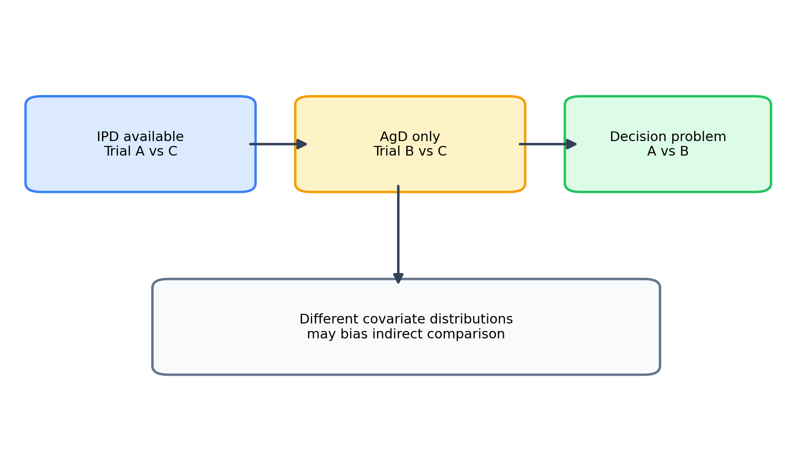
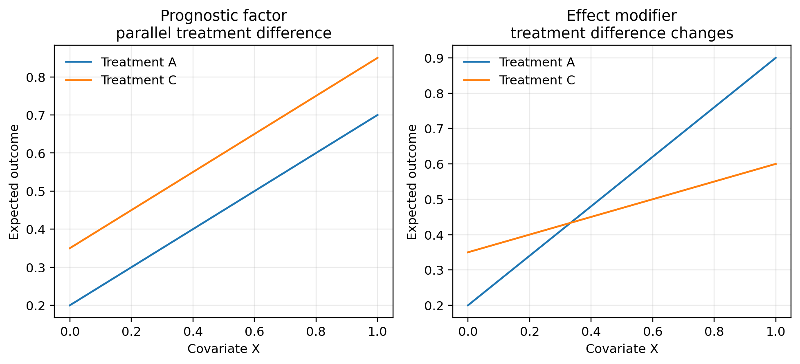
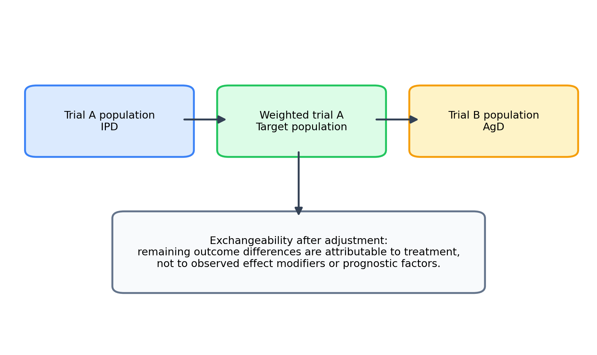
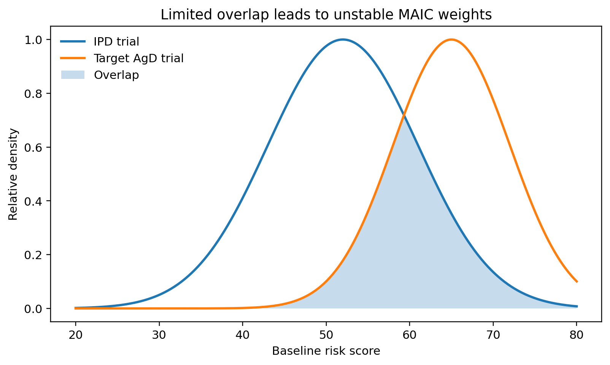
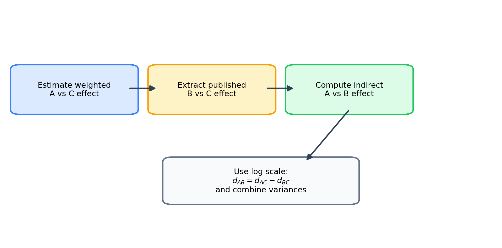
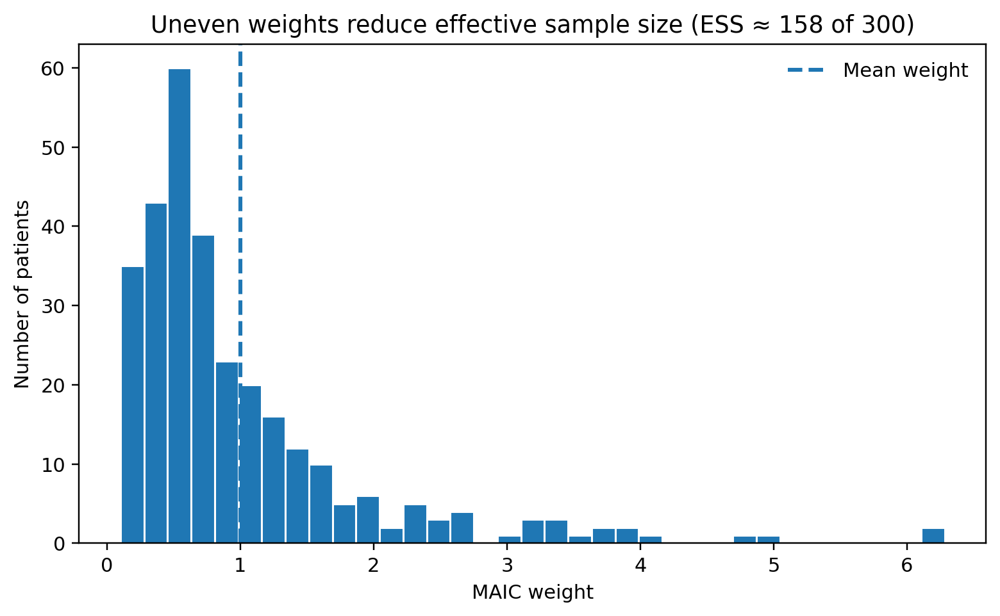
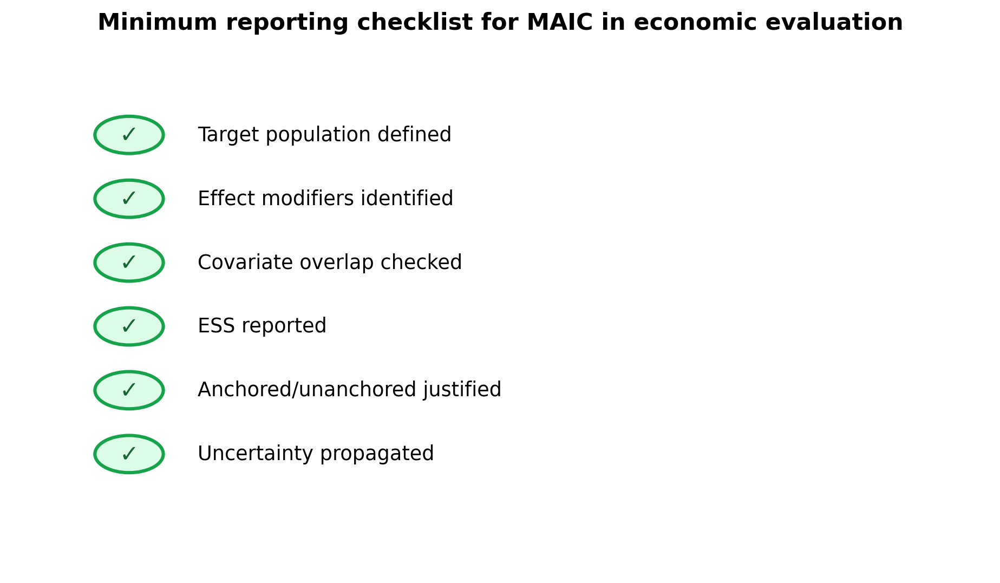
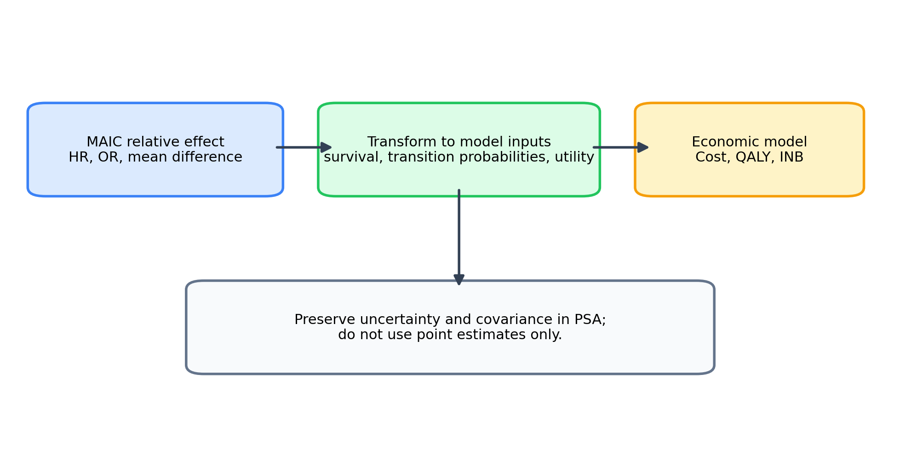
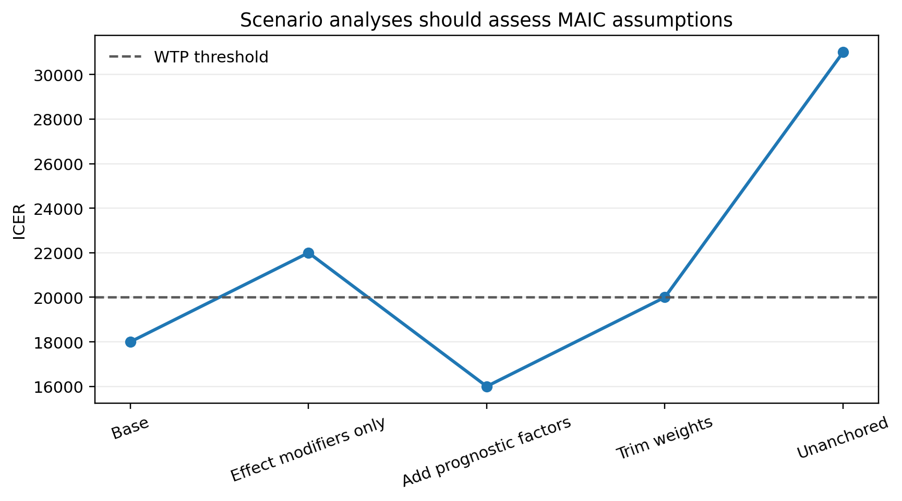

경제성 평가는 특정 의약품을 실제 의사결정 대상 치료대안과 비교해야 한다. 그러나 신약 개발 과정에서 수행된 임상시험의 대조군이 급여평가에서 요구하는 비교약과 일치하지 않는 경우가 많다. 예를 들어 신약 \(A\)는 표준치료 \(C\)와 비교되어 있고, 경쟁약 \(B\)도 표준치료 \(C\)와 비교되어 있다고 하자.
\[
A \text{ vs } C
\]
\[
B \text{ vs } C
\]
이 경우 공통 비교군 \(C\)를 이용하면 \(A\)와 \(B\)의 간접 비교가 가능하다. 로그 상대효과 척도에서 간접 비교의 기본 식은 다음과 같다.
여기서 \(d_{XY}\)는 치료 \(X\)의 치료 \(Y\) 대비 상대효과이다. 예를 들어 \(d_{XY}\)가 로그 위험비라면 \(d_{AB}\)는 \(A\)의 \(B\) 대비 로그 위험비이다.
문제는 두 임상시험의 환자분포가 다를 때 발생한다. \(A\) 임상시험에는 예후가 좋은 환자가 많이 포함되고, \(B\) 임상시험에는 예후가 나쁜 환자가 많이 포함되어 있다면, 관찰된 효과 차이가 치료제 차이 때문인지 환자 구성 차이 때문인지 구분하기 어렵다. 특히 치료효과가 환자의 기저특성에 따라 달라지는 경우, 즉 효과변경이 존재하는 경우에는 단순 간접 비교가 목표 모집단의 치료효과를 잘 반영하지 못할 수 있다.

MAIC가 필요한 근거 공백
이 그림은 두 임상시험이 공통 비교군으로 연결되더라도 환자 특성의 분포가 다르면 상대효과가 동일한 모집단을 대상으로 하지 않을 수 있음을 보여준다. MAIC(Matching-Adjusted Indirect Comparison)는 IPD 시험의 환자분포를 비교시험의 모집단에 가깝게 재구성하여 이 근거 공백을 줄이려는 방법이다.
MAIC의 핵심은 IPD가 있는 임상시험의 환자분포를 AgD 임상시험의 목표 환자분포와 비슷하게 만드는 것이다. 이를 위해 IPD의 각 환자에게 가중치 \(w_i\)를 부여하고, 가중 후 평균 기저특성이 AgD에 보고된 평균과 같아지도록 한다.
여기서 \(X_i\)는 IPD 임상시험의 환자 \(i\)의 기저특성 벡터이고, \(\bar X_B\)는 AgD 임상시험에서 보고된 동일 변수들의 평균이다. 이 식은 MAIC의 가장 중요한 균형 조건이다.
Note핵심 아이디어
MAIC는 치료효과를 직접 보정하는 방법이 아니다. IPD가 있는 임상시험의 환자분포를 비교 임상시험의 집계 기저특성에 맞추는 방법이다. 따라서 어떤 변수를 맞출 것인지가 MAIC의 과학적 타당성을 좌우한다.
MAIC는 다음 상황에서 특히 자주 사용된다.
신약 임상시험의 IPD는 있지만 경쟁약 임상시험은 출판된 AgD만 있는 경우
두 임상시험의 환자 특성이 다르고, 이 차이가 치료효과에 영향을 줄 가능성이 있는 경우
네트워크가 단순하거나 폐쇄 루프가 없어 표준 NMA의 일관성 평가가 어려운 경우
단일군 임상시험을 외부 대조자료와 비교해야 하는 경우
경제성 평가 모델에 사용할 비교약 대비 상대효과가 필요한 경우
그러나 MAIC의 결과는 조정 가능한 관찰 변수에 의존한다. 관찰되지 않은 효과변경인자나 예후인자가 있으면 편향은 남는다. 특히 공통 비교군이 없는 unanchored MAIC는 모든 중요한 예후인자와 효과변경인자가 관찰되고 조정되었다는 매우 강한 가정을 필요로 한다.
14.2 목표 estimand와 자료구조
MAIC를 시작하기 전에 먼저 어떤 모집단에서 어떤 치료효과를 추정할 것인지 정의해야 한다. IPD가 이용 가능한 시험을 \(S=A\), 집계자료만 이용 가능한 시험을 \(S=B\)라고 하고 치료를 \(Z\in\{A,B,C\}\)로 표시하자. 일반적인 anchored MAIC의 목표는 시험 \(B\)의 모집단에서 치료 \(A\)와 \(B\)를 비교한 평균 상대효과이다.
여기서 \(g(\cdot)\)는 결과에 적합한 연결함수이다. 연속형 결과에서는 항등함수, 이항 결과에서는 logit, 시간-사건 결과에서는 로그 위험 또는 다른 생존척도를 사용할 수 있다. 같은 자료라도 효과척도가 달라지면 효과변경인자와 전이성 가정이 달라질 수 있다. 따라서 MAIC의 estimand는 목표 모집단, 결과변수, 추적시점, 효과척도, 중간사건 처리방식을 함께 포함해야 한다.
MAIC는 시험 \(A\)에서 관찰된 환자의 결과를 이용해 시험 \(B\) 모집단에서의 치료효과를 추정하는 운반가능성 분석이다. 이때 단순히 두 시험의 기저특성 표를 비슷하게 만드는 것이 목적이 아니라, 시험 \(A\)의 조건부 치료효과를 시험 \(B\)의 공변량 분포에 대해 평균내는 것이 목적이다.
여기서 \(\Delta_{AC}(x)\)는 공변량 \(x\)에서의 조건부 치료효과이다. 치료효과가 \(x\)에 따라 변하지 않으면 시험 간 환자분포가 달라도 상대효과는 동일할 수 있다. 반대로 효과변경이 존재하면 \(F_A(x)\)와 \(F_B(x)\)의 차이가 곧 모집단 평균 치료효과의 차이로 이어진다.
14.3 효과변경인자와 예후인자
MAIC에서 가장 중요한 변수 선택 원칙은 효과변경인자(effect modifier)와 예후인자(prognostic factor)를 구분하는 것이다.
예후인자는 치료와 관계없이 결과에 영향을 주는 변수이다. 전체생존기간을 결과로 할 때 연령, 질병 단계, ECOG 수행상태, 이전 치료 횟수, 기저 위험도는 예후인자가 될 수 있다. 예후인자는 절대 결과수준에는 영향을 주지만, 반드시 상대치료효과를 바꾸는 것은 아니다.
효과변경인자는 치료효과의 크기를 변화시키는 변수이다. 예를 들어 바이오마커 양성 환자에서는 면역항암제의 효과가 크고 바이오마커 음성 환자에서는 효과가 작다면, 바이오마커 상태는 효과변경인자이다. 효과변경인자가 임상시험 간에 불균형하면 상대효과 추정치 자체가 목표 모집단에 맞지 않게 된다.

예후인자와 효과변경인자
그림에서 예후인자는 두 치료군의 결과수준을 함께 이동시키는 반면, 효과변경인자는 치료군 간 차이의 크기 자체를 변화시킨다. Anchored MAIC에서 상대효과를 운반하려면 특히 효과변경인자의 분포를 맞추는 것이 중요하다.
수식으로 보면, 결과 \(Y\)의 조건부 평균을 다음과 같이 표현할 수 있다.
\[
\mathbb{E}(Y\mid Z,X)=\beta_0+\beta_1 Z+\beta_2 X+\beta_3 Z X
\]
MAIC에서 anchored 비교와 unanchored 비교의 변수 조정 요구 수준은 다르다.
비교 유형
반드시 조정해야 할 변수
가능하면 조정할 변수
이유
Anchored MAIC
효과변경인자
주요 예후인자
공통 비교군이 예후 차이를 일부 상쇄하지만 효과변경은 상쇄되지 않음
Unanchored MAIC
모든 효과변경인자와 모든 예후인자
결과에 영향을 줄 가능성이 있는 모든 변수
공통 비교군이 없으므로 절대 결과 차이가 모두 변수 조정에 의존
anchored MAIC에서는 공통 비교군 \(C\)가 있기 때문에 두 시험의 절대 예후 차이가 부분적으로 상쇄될 수 있다. 그러나 효과변경인자가 다르면 \(A\) vs \(C\) 효과와 \(B\) vs \(C\) 효과가 서로 다른 환자분포에서 추정되므로 간접 비교가 편향된다. 따라서 anchored MAIC에서는 효과변경인자의 조정이 핵심이다.
unanchored MAIC에서는 공통 비교군이 없다. 이때 \(A\) 단일군 결과와 \(B\) 단일군 결과의 차이를 치료효과로 해석하려면, 두 군의 결과에 영향을 주는 모든 예후인자와 모든 효과변경인자가 조정되어야 한다. 이 가정은 일반적으로 검증하기 어렵고 매우 강하다.
Warning변수 선택의 핵심
MAIC에서 변수 선택은 통계적 유의성이나 자동선택 알고리즘으로 결정해서는 안 된다. 사전에 임상적 지식, 문헌, 하위군 분석, 전문가 의견을 바탕으로 효과변경인자와 예후인자를 정의해야 한다.
14.3.1 효과척도와 비축약성
효과변경 여부는 선택한 효과척도에 의존한다. 예를 들어 위험차는 일정하지만 오즈비는 기저위험에 따라 달라질 수 있고, 오즈비는 조건부 공변량 효과가 없어도 주변화 과정에서 값이 변할 수 있다. 이를 비축약성(non-collapsibility)이라고 한다.
와 같고 치료-공변량 상호작용이 없더라도, \(X\)를 평균낸 주변 오즈비는 일반적으로 \(\exp(\beta_1)\)과 같지 않다. 따라서 서로 다른 공변량 분포에서 추정된 조건부 오즈비를 단순히 비교하면 효과변경이 없더라도 차이가 나타날 수 있다.
Anchored 비교에서는 상대효과를 최대한 축약 가능한 척도에서 정의하는 것이 해석에 유리하다. 위험차와 위험비는 특정 조건에서 축약 가능하지만, 오즈비와 위험비는 모형과 사건빈도에 따라 주변화 효과가 다르다. 분석자는 두 시험에서 보고된 효과척도가 동일한지뿐 아니라 조건부 효과인지 주변 효과인지 확인해야 한다.
14.4 교환가능 가정
MAIC의 목표는 IPD 임상시험의 환자분포를 AgD 임상시험의 목표 모집단에 맞춘 후, 조정된 비교가 마치 같은 목표 모집단에서 수행된 것처럼 해석되게 만드는 것이다. 이를 위해서는 교환가능성(exchangeability), 양성성(positivity), 일관성(consistency) 가정이 필요하다.
IPD 임상시험의 환자분포를 \(F_A(X)\), AgD 임상시험의 목표 환자분포를 \(F_B(X)\)라고 하자. MAIC는 \(F_A(X)\)에 가중치를 부여하여 \(F_B(X)\)를 근사한다.
\[
F_A^w(X) \approx F_B(X)
\]
잠재결과 표기법을 사용하면, 목표 모집단 \(B\)에서 치료 \(z\)를 받았을 때의 평균 잠재결과는 다음과 같다.
\[
\mu_z^B=\mathbb{E}_{F_B}\{Y(z)\}
\]
IPD가 있는 \(A\) 임상시험에서 가중치를 사용하여 이를 추정하려면 다음 조건이 필요하다.
\[
Y(z) \perp S \mid X
\]
여기서 \(S\)는 어떤 임상시험 또는 자료원에 속하는지를 나타내는 지표이다. 이 식은 관찰된 기저특성 \(X\)를 조건부로 하면, 자료원 차이가 잠재결과의 분포에 추가적인 영향을 주지 않는다는 뜻이다.

교환가능성의 직관
이 그림의 핵심은 관찰된 공변량을 같게 만들었을 때 시험 소속 자체가 잠재결과에 추가 정보를 제공하지 않아야 한다는 점이다. 시험마다 후속치료, 평가방법, 달력시간이 다르면 기저특성 균형만으로 교환가능성이 확보되지 않을 수 있다.
양성성은 목표 모집단에 존재하는 환자 유형이 IPD 임상시험에도 충분히 존재해야 한다는 조건이다. 만약 AgD 임상시험의 환자들이 대부분 고위험군인데 IPD 임상시험에는 고위험군이 거의 없다면, MAIC는 작은 수의 환자에게 매우 큰 가중치를 부여하게 된다. 이 경우 ESS가 작아지고 추정의 불확실성이 커진다.
\[
0 < P(S=A\mid X=x) < 1 \quad \text{for } x \text{ in the target population}
\]

중첩성과 양성성
두 모집단의 공변량 분포가 충분히 겹치면 다수의 환자가 목표 모집단을 대표하지만, 중첩이 약하면 일부 환자의 가중치가 급격히 커진다. 따라서 양성성은 단순한 기술적 조건이 아니라 외삽이 아니라 보간에 가까운 비교를 가능하게 하는 조건이다.
일관성은 관찰된 치료결과가 해당 치료의 잠재결과와 일치한다는 가정이다. 즉, 환자 \(i\)가 실제로 치료 \(Z_i\)를 받았다면 관찰결과 \(Y_i\)는 \(Y_i(Z_i)\)와 같아야 한다.
\[
Y_i = Y_i(Z_i)
\]
경제성 평가에서는 교환가능 가정이 치료효과 추정뿐 아니라 비용, 효용, 장기 생존외삽에도 영향을 준다. 예를 들어 MAIC로 추정한 위험비가 목표 모집단의 생존효과를 잘 반영하더라도, 비용이나 효용의 목표 모집단 분포가 다르면 ICER는 여전히 편향될 수 있다. 따라서 MAIC 결과를 경제성 평가에 사용할 때에는 상대효과뿐 아니라 비용, 효용, 이상반응, 치료중단, 이후 치료 패턴의 일반화 가능성도 함께 평가해야 한다.
14.4.1 밀도비와 재가중의 원리
이상적으로 목표 모집단 \(B\)의 평균은 시험 \(A\) 자료에 다음 밀도비를 적용하여 표현할 수 있다.
단, \(\widehat d_{AC}^{w}\)의 분산은 가중치 추정의 불확실성과 치료효과 추정의 불확실성을 포함해야 한다. 실제 분석에서는 robust variance, bootstrap, 또는 Bayesian joint modeling을 고려할 수 있다.
anchored MAIC의 장점은 공통 비교군이 존재한다는 점이다. 공통 비교군은 시험 간 절대 위험도 차이, 진료환경 차이, 추적기간 차이의 일부를 상쇄하는 역할을 한다. 따라서 anchored MAIC는 unanchored MAIC보다 일반적으로 가정이 약하다. 그러나 다음 조건은 여전히 중요하다.
공통 비교군 \(C\)가 두 시험에서 임상적으로 충분히 유사해야 한다.
조정한 효과변경인자가 충분해야 한다.
치료효과 척도에서 일관성 가정이 타당해야 한다.
추적기간, 평가변수 정의, censoring, subsequent therapy가 비교 가능해야 한다.
14.5.1 Anchored MAIC의 식별 논리
공통 비교군을 이용하는 이유는 시험 간 예후 차이를 상대효과에서 제거하기 위해서이다. 목표 모집단 \(B\)에서 로그 효과를
가 된다. MAIC는 첫 번째 항 \(d_{AC}^{B}\)를 시험 \(A\)의 IPD를 재가중하여 추정하고, 두 번째 항은 시험 \(B\)에서 보고된 값을 사용한다.
이 식이 타당하려면 공통 비교군 \(C\)가 두 시험에서 이름만 같은 치료가 아니라 용량, 병용치료, 후속치료, 치료전환, 결과 측정방식이 충분히 같아야 한다. 또한 상대효과가 정의된 척도에서 효과변경인자가 모두 조정되어야 한다. 공통 비교군이 있다는 사실만으로 전이성이 자동으로 확보되는 것은 아니다.
시험 \(B\)의 \(B\) 대 \(C\) 효과와 가중된 시험 \(A\)의 \(A\) 대 \(C\) 효과가 독립이라는 가정은 별도 연구에서 추정되었을 때 흔히 사용된다. 그러나 두 효과가 동일한 외부자료, 공통 생존곡선, 공유된 보정모수에 의존하면 공분산 항을 포함해야 한다.
이 조건은 측정된 공변량이 같다면 시험 장소, 치료시기, 후속치료, 영상평가, 검열과정 등 자료원 차이가 결과에 영향을 주지 않는다는 뜻이다. 관찰되지 않은 예후인자가 하나라도 남아 있으면 치료효과와 시험 차이를 분리할 수 없다.
또한 집계자료의 평균만으로는 조건부 결과모형을 완전히 복원할 수 없다. 예를 들어 결과가 연령의 제곱이나 연령과 ECOG의 상호작용에 의존한다면 평균 연령과 ECOG 비율만 맞추어도 그 비선형 구조는 균형되지 않을 수 있다. Unanchored 분석에서 이러한 잔여 구조 차이는 곧 절대효과 편향으로 연결된다.
따라서 unanchored MAIC의 신뢰성은 통계적 유의성보다 미측정 교란에 대한 민감도에 의해 평가되어야 한다. 가능한 경우 외부 자연사 자료, 음성 대조결과, 전문가가 설정한 미측정 예후인자 분포를 이용해 편향 시나리오를 제시할 수 있다.
14.7 간접 비교 절차
MAIC 분석 절차는 다음 순서로 진행하는 것이 바람직하다.
의사결정 문제와 목표 모집단을 정의한다.
비교할 임상시험, 치료군, 평가변수, 추적기간을 정리한다.
anchored 또는 unanchored 비교인지 판단한다.
효과변경인자와 예후인자를 사전에 선정한다.
IPD 변수와 AgD 변수 정의가 일치하는지 확인한다.
AgD 목표값에 맞도록 IPD 가중치를 추정한다.
가중 후 균형과 ESS를 평가한다.
가중 치료효과를 추정한다.
간접 비교 효과와 분산을 계산한다.
경제성 평가 모형 입력값으로 변환하고 PSA에 반영한다.

MAIC 간접 비교 흐름
분석 흐름에서 가장 중요한 단계는 가중치 계산 자체가 아니라 목표 estimand와 조정변수를 사전에 정하는 과정이다. 균형 진단, 효과 추정, 불확실성 전파는 모두 이 사전 정의에 의존한다.
AgD에서 보고된 값은 평균, 표준편차, 비율, 중앙값, 범주별 비율 등 다양할 수 있다. MAIC의 표준적인 균형식은 평균 또는 비율에 기반한다. 연속형 변수의 평균과 이항 변수의 비율은 모두 \(\bar X_B\)의 구성요소로 포함할 수 있다.
범주형 변수가 세 개 이상의 수준을 가지면 더미변수로 변환하여 각 범주의 비율을 맞춘다. 예를 들어 ECOG가 0, 1, 2 이상이라면 두 개 또는 세 개의 지표변수를 사용해 AgD의 범주분포와 균형을 맞춘다.
변수 정의가 두 연구에서 다르면 MAIC의 해석이 어려워진다. 예를 들어 하나의 연구는 ECOG 0/1만 보고하고 다른 연구는 ECOG 0, 1, 2 이상을 따로 보고했다면, 변수 재분류가 필요하다. 이 과정에서 정보 손실과 잔여 불균형이 발생할 수 있다.
14.7.1 집계 모멘트만 이용할 때의 한계
AgD에서 평균과 비율만 보고되면 MAIC는 그 모멘트들만 정확히 맞출 수 있다. 평균의 균형은 전체 분포의 균형과 동일하지 않다. 연속형 변수 \(X\)에 대해 치료효과가
가 된다. 평균 \(\mathbb{E}_B(X)\)만 맞추고 두 번째 모멘트 \(\mathbb{E}_B(X^2)\)를 맞추지 않으면 비선형 효과변경은 제거되지 않는다.
같은 이유로 여러 변수의 평균을 각각 맞추어도 변수 간 상관구조는 맞지 않을 수 있다. 상호작용이 예상되면 교차항 \(X_1X_2\)의 목표 모멘트가 필요하지만, 출판된 AgD에는 이런 정보가 거의 보고되지 않는다. 따라서 MAIC의 타당성은 이용 가능한 집계 통계의 풍부성에 의해 제한된다.
중앙값과 범위만 보고된 자료를 평균과 표준편차로 변환해 사용할 수 있지만, 이는 분포 가정에 추가로 의존한다. 변환된 값을 정확한 목표값처럼 취급하면 가중치 불확실성을 과소평가할 수 있다.
14.8 MAIC 가중치 추정
IPD 임상시험의 환자 \(i=1,\ldots,n\)에 대해 조정 변수 벡터를 \(X_i\)라고 하자. AgD 임상시험에서 보고된 목표 평균을 \(\bar X_B\)라고 하면, MAIC는 다음 조건을 만족하는 가중치 \(w_i\)를 찾는다.
가 된다. 즉, MAIC는 임의의 방식으로 환자를 복제하는 것이 아니라 지정된 균형조건을 만족하는 분포 중 원래 IPD 분포와 상대엔트로피가 가장 가까운 분포를 선택한다.
목표 모멘트가 IPD 자료의 볼록껍질(convex hull) 밖에 있으면 음이 아닌 가중치로 정확한 균형을 달성할 수 없다. 목표값이 볼록껍질의 경계에 가까운 경우에는 이론적으로 해가 존재하더라도 극단 가중치가 발생한다. 이는 최적화 알고리즘의 실패가 아니라 자료의 중첩성 부족을 반영한다.
14.9 Effective sample size
MAIC에서 가중치가 고르게 분포하면 정보 손실이 작지만, 일부 환자에게 매우 큰 가중치가 부여되면 실질적으로 소수 환자에 분석이 의존하게 된다. 이를 평가하기 위해 effective sample size(ESS)를 사용한다.
모든 환자의 가중치가 같으면 \(ESS=n\)이다. 반대로 몇 명의 환자에게 큰 가중치가 몰리면 ESS는 크게 감소한다. ESS가 작다는 것은 목표 AgD 모집단과 IPD 모집단의 중첩성이 부족하거나, 너무 많은 변수를 맞추고 있거나, AgD의 목표값이 IPD 자료의 주변부에 위치한다는 신호일 수 있다.

가중치 분포와 ESS
가중치가 한쪽 꼬리에 집중될수록 소수 환자가 전체 추정을 지배하고 ESS가 감소한다. 히스토그램과 ESS는 서로 보완적이며, 동일한 ESS라도 최대 가중치와 상위 몇 명의 기여도가 다르면 추정의 민감성이 달라질 수 있다.
ESS는 다음과 같은 방식으로 보고하는 것이 좋다.
\[
\text{ESS ratio}=\frac{ESS}{n}
\]
예를 들어 원래 IPD 표본 크기가 300명이고 ESS가 90명이라면 ESS ratio는 0.30이다. 이는 가중 후 정보량이 원자료의 약 30% 수준으로 감소했음을 의미한다.
TipESS 해석
ESS가 작다고 해서 MAIC가 항상 잘못된 것은 아니다. 그러나 ESS가 매우 작으면 추정 불확실성이 커지고 결과가 소수 환자에 민감해진다. 따라서 가중치 분포, 최대 가중치, ESS, trimming 또는 변수선택 시나리오를 함께 보고해야 한다.
14.9.1 ESS, 가중치 변동계수와 설계효과
가중치 평균이 1로 정규화되어 있으면 ESS는 가중치의 변동계수와 다음 관계를 갖는다.
\[
ESS
=
\frac{n}{1+CV(w)^2},
\]
여기서 \(CV(w)=SD(w)/\bar w\)이다. 따라서 가중치 변동계수가 커질수록 ESS가 감소한다. 이에 대응하는 근사 설계효과는
\[
DEFF_w
\approx
1+CV(w)^2
=
\frac{n}{ESS}
\]
로 표현할 수 있다. 그러나 이 관계는 독립 관측치와 단순한 가중 평균을 전제로 한 기술적 근사이다. 치료효과 추정량의 실제 분산은 결과와 가중치의 연관성, 치료군별 가중치 분포, 사건 수, 검열과정에도 의존한다.
ESS는 단일 숫자로 중첩성 문제를 완전히 요약하지 못한다. 다음 지표를 함께 보는 것이 좋다.
최소·최대 및 상위 백분위 가중치
총 가중치 중 상위 1%, 5%, 10% 환자가 차지하는 비율
치료군별 ESS와 사건 수
조정변수 추가 전후의 ESS 변화
특정 환자를 제거했을 때 효과추정치의 변화
가중치를 절단하면 분산은 감소할 수 있지만 정확한 균형이 깨지고 추정 대상도 달라진다. 예를 들어 \(w_i^*=\min(w_i,c)\)로 절단하면 원래 목표 모집단 \(F_B\)가 아니라 중첩성이 더 높은 절충 모집단에 가까운 효과를 추정한다. 따라서 trimming은 단순한 수치 안정화가 아니라 편향과 분산 및 estimand 사이의 선택이다.
14.10 MAIC 방법에 필요한 가정
MAIC의 타당성은 다음 가정에 의존한다.
첫째, 목표 모집단이 명확해야 한다. MAIC는 IPD 임상시험을 AgD 임상시험의 환자분포에 맞춘다. 따라서 추정된 상대효과는 일반적으로 AgD 임상시험의 환자분포에 대한 효과이다.
\[
\Delta^{B}=\mathbb{E}_{F_B}\{Y(A)-Y(B)\}
\]
둘째, anchored MAIC에서는 모든 효과변경인자가 조정되어야 한다. 예후인자는 절대 결과에는 영향을 주지만, 공통 비교군이 있는 상대효과 비교에서는 일부 상쇄될 수 있다. 그러나 효과변경인자가 불균형하면 상대효과 자체가 달라진다.
셋째, unanchored MAIC에서는 모든 예후인자와 모든 효과변경인자가 조정되어야 한다. 이는 매우 강한 가정이다.
넷째, 양성성이 필요하다. 목표 모집단의 환자 유형이 IPD 자료에 충분히 포함되어야 한다.
다섯째, 변수 정의와 측정 시점이 비교 가능해야 한다. 동일한 이름의 변수라도 측정 방법, cutoff, 결측 처리 방식이 다르면 균형 조건이 의미를 잃을 수 있다.
여섯째, 결과 정의와 추적기간이 비교 가능해야 한다. 전체생존기간, 무진행생존기간, 반응률, 이상반응률의 정의가 다르면 직접 비교가 어렵다.
일곱째, 가중치 추정의 불확실성을 고려해야 한다. 점추정만 경제성 평가에 넣으면 MAIC가 가진 불확실성을 과소평가할 수 있다.

MAIC 보고 체크리스트
이 그림은 MAIC의 타당성이 하나의 적합도 통계량으로 결정되지 않음을 보여준다. 임상적 비교가능성, 변수 정의, 중첩성, 가중치 안정성, 효과모형, 불확실성 분석을 함께 검토해야 한다.
14.11 분산추정과 추론
MAIC 분석에는 두 단계의 추정이 포함된다. 첫 단계에서 calibration parameter \(\widehat\alpha\)와 가중치를 추정하고, 두 번째 단계에서 이 가중치를 사용하여 치료효과 \(\widehat\theta(\widehat\alpha)\)를 추정한다. 가중치를 고정된 값처럼 취급하면 첫 단계의 불확실성이 누락될 수 있다.
치료효과 추정방정식을 \(U_\theta(\theta,\alpha)=0\), 균형 추정방정식을 \(U_\alpha(\alpha)=0\)이라고 하면 두 단계를 하나의 stacked estimating equation으로 표현할 수 있다.
비모수 부트스트랩에서는 IPD 환자를 재표집한 뒤 각 표본에서 가중치를 다시 추정하고 치료효과를 계산해야 한다. 기존 가중치를 고정한 채 결과만 재추정하면 가중치 추정의 변동이 반영되지 않는다. 군집 무작위시험이나 반복측정 자료에서는 환자보다 상위의 무작위화 또는 독립 단위를 재표집해야 한다.
출판된 AgD 목표 평균과 상대효과 자체에도 표본오차가 있다. 표준 MAIC는 흔히 이 목표값을 고정된 값으로 취급하지만, 원칙적으로는 AgD 모멘트의 분산과 공분산도 전체 불확실성에 포함되어야 한다. 다만 논문에서 필요한 공분산이 보고되지 않는 경우가 많아 완전한 전파가 어렵다.
14.12 가상의 사례
가상의 항암제 평가를 생각해보자. 신청약 \(A\)는 대조군 \(C\)와 비교한 임상시험의 IPD를 가지고 있다. 경쟁약 \(B\)는 대조군 \(C\)와 비교한 출판 논문만 존재한다. 경제성 평가에서는 \(A\)와 \(B\)를 비교해야 한다.
\(A\) 임상시험의 IPD에는 다음 변수가 있다.
연령
ECOG 수행상태
바이오마커 양성 여부
이전 치료 횟수
질병 단계
치료군
전체생존기간 또는 사건 여부
\(B\) 임상시험의 논문에는 다음 집계 기저특성이 보고되어 있다.
변수
\(A\) 임상시험 원자료 평균
\(B\) 임상시험 AgD 목표값
평균 연령
58
64
ECOG 1 이상 비율
0.42
0.60
바이오마커 양성 비율
0.50
0.35
이전 치료 2회 이상 비율
0.25
0.45
이 경우 \(A\) 임상시험의 환자들은 \(B\) 임상시험보다 젊고, ECOG가 좋고, 이전 치료 횟수가 적으며, 바이오마커 양성 비율이 높다. 이러한 차이가 예후나 치료효과에 영향을 준다면 단순 간접 비교는 \(A\)에 유리하게 편향될 수 있다.
MAIC는 \(A\) 임상시험 IPD에 가중치를 부여하여 가중 후 평균 연령이 64, ECOG 1 이상 비율이 0.60, 바이오마커 양성 비율이 0.35, 이전 치료 2회 이상 비율이 0.45가 되도록 만든다. 그 후 가중된 \(A\) vs \(C\) 상대효과를 추정하고, 출판된 \(B\) vs \(C\) 상대효과와 결합한다.
경제성 평가에서는 이 결과를 비교약 \(B\) 대비 신약 \(A\)의 상대 생존효과로 사용한다. 예를 들어 \(B\)의 기준 생존함수 \(S_B(t)\)가 있고 MAIC로 \(HR_{AB}\)를 추정했다면, 비례위험 가정하에서 \(A\)의 생존함수는 다음과 같이 변환할 수 있다.
\[
S_A(t)=\{S_B(t)\}^{HR_{AB}}
\]
주기별 사건확률은 다음과 같이 계산할 수 있다.
\[
p_{A,k}=1-\frac{S_A(t_{k+1})}{S_A(t_k)}
\]
만약 상대효과가 오즈비라면 기준 사건확률 \(p_B\)에 다음 변환식을 적용한다.
\[
p_A=\frac{OR_{AB}p_B}{1-p_B+OR_{AB}p_B}
\]
이처럼 MAIC 결과는 경제성 평가 모형에서 생존곡선, 전이확률, 반응률, 이상반응률, 치료중단률 등의 입력값으로 변환된다.
14.13 생존결과와 검열의 처리
시간-사건 결과에서 MAIC 가중치는 시험 모집단 차이를 보정하지만 검열과정까지 자동으로 보정하지는 않는다. 가중된 Kaplan–Meier 추정량은 사건시점 \(t_j\)에서 가중 사건 수와 가중 위험집합을 사용한다.
여기서 \(N_i(t)\)는 사건 계수과정이고 \(Y_i(t)\)는 위험집합 지표이다. 이 추정량은 가중 후에도 검열이 사건시간과 조건부 독립이라는 가정을 필요로 한다.
가중 Cox 모형으로 위험비를 추정할 수 있지만, 위험비가 비례위험 가정에 의존하고 비축약적이라는 점을 고려해야 한다. 두 시험의 추적기간이나 위험함수 형태가 다르면 하나의 상수 위험비는 목표 모집단의 장기효과를 충분히 나타내지 못할 수 있다. 대안으로 특정 시점 생존확률, 제한평균생존시간, 시간구간별 위험비를 비교할 수 있다.
경쟁위험 결과에서는 원인별 위험비만으로 누적발생함수를 직접 결정할 수 없다. 모든 원인의 위험과 기준 누적발생함수를 일관되게 결합해야 한다. 경제성 평가에서 진행, 치료중단, 사망을 별도 전이로 사용할 경우 각 결과를 독립적으로 MAIC하여 얻은 효과가 하나의 확률모형 안에서 양립하는지도 확인해야 한다.
치료전환, 후속치료, 평가간격이 시험마다 다르면 단순 가중으로 해결되지 않는 시험설계 차이가 된다. 이러한 차이는 별도의 estimand 분석이나 구조적 시나리오로 다루어야 한다.
14.14 경제성 평가 입력값으로의 변환
MAIC 결과를 경제성 평가에 사용할 때 가장 중요한 원칙은 상대효과의 척도를 유지하면서 기준위험 또는 기준생존함수에 적용하는 것이다.
위험비 또는 hazard ratio가 추정되었다면 생존함수에 적용한다.
\[
S_A(t)=\{S_B(t)\}^{HR_{AB}}
\]
사건확률로 표현하면 다음과 같다.
\[
p_A(t)=1-\{1-p_B(t)\}^{HR_{AB}}
\]
오즈비가 추정되었다면 오즈 척도에서 변환한다.
\[
Odds_A=OR_{AB}\times Odds_B
\]
\[
p_A=\frac{OR_{AB}p_B}{1-p_B+OR_{AB}p_B}
\]
평균 차이가 추정되었다면 기준 평균에 더한다.
\[
\mu_A=\mu_B+MD_{AB}
\]
로그 평균비가 추정되었다면 원래 척도에서는 곱셈 효과가 된다.
\[
\mu_A=\mu_B\exp(d_{AB})
\]

MAIC 결과의 경제성 평가 입력값 변환
MAIC에서 얻은 상대효과는 그 효과척도와 시간구조를 유지한 채 기준위험에 적용해야 한다. 오즈비를 위험비처럼 사용하거나 시간가변 위험비를 하나의 상수로 적용하면 경제성 평가 모형의 절대효과가 왜곡될 수 있다.
PSA에서는 MAIC 점추정치만 사용해서는 안 된다. 상대효과의 불확실성을 확률분포로 반영해야 한다. 로그 상대효과 \(d\)와 표준오차 \(SE(d)\)가 있으면 다음과 같이 둘 수 있다.
여러 상대효과가 동일한 가중치와 동일한 환자자료에서 추정되면 서로 상관된다. PSA에서 각 효과를 독립적으로 추출하면 생존, 반응, 이상반응 사이의 공동 불확실성이 훼손될 수 있다.
14.14.1 불확실성과 경제성 평가의 결합
MAIC 상대효과와 기준위험은 서로 다른 연구에서 추정되었더라도 목표 모집단을 통해 논리적으로 연결된다. 기준위험이 AgD 시험의 대조군에서 추정되고 상대효과도 같은 시험의 공변량 목표값을 사용했다면, 둘 사이의 불확실성이 완전히 독립이라고 단정하기 어렵다. 가능한 경우 공동 부트스트랩, 베이지안 공동모형 또는 보고된 공분산을 사용해야 한다.
경제성 평가의 순편익을 \(NB(\theta,\psi)\)라고 하자. 여기서 \(\theta\)는 MAIC 상대효과, \(\psi\)는 기준위험과 비용·효용 모수이다. 전체 불확실성은
처럼 여러 자료원과 모형층으로 분해될 수 있다. MAIC의 표준오차만 반영하고 변수선택, 미측정 효과변경, trimming, 비례위험 가정을 고정하면 구조적 불확실성이 누락된다.
따라서 PSA에서는 통계적 모수 불확실성을 확률적으로 추출하고, 다음 항목은 별도의 구조적 시나리오 또는 모형평균으로 평가하는 것이 적절하다.
조정변수의 포함 범위
AgD 모멘트 변환 방법
극단 가중치 처리
효과척도와 시간가변 효과
기준위험 자료원
미측정 효과변경인자에 대한 편향 시나리오
특히 ESS가 작다는 이유만으로 표준오차에 임의의 팽창계수를 곱하는 것은 근거가 약하다. 정보손실은 적절한 분산추정과 재표집에서 자연스럽게 반영되어야 하며, 추가적인 보수성은 명시적인 구조적 시나리오로 제시하는 편이 투명하다.
MAIC 결과를 경제성 평가에 넣을 때는 다음 시나리오 분석도 중요하다.
조정 변수 세트 변경
효과변경인자만 조정한 분석과 예후인자까지 포함한 분석 비교
극단 가중치 trimming 또는 truncation
ESS가 작은 경우 보수적 불확실성 반영
anchored 결과와 unanchored 결과 구분
기준생존함수 또는 기준 사건확률 자료원 변경
비례위험 가정 유지, 약화, 소실 시나리오

MAIC 가정에 대한 시나리오 분석
시나리오 분석은 결과를 유리하게 만드는 사후 선택이 아니라 식별할 수 없는 가정의 영향을 드러내는 절차이다. 변수 세트, 가중치 제한, 기준위험, 치료효과 지속기간을 바꿨을 때 의사결정이 유지되는지를 평가해야 한다.
14.15 MAIC와 대안적 모집단 조정 방법
MAIC는 결과모형을 직접 지정하지 않고 집계 공변량에 맞춘 가중치를 사용한다. 반면 simulated treatment comparison(STC)은 IPD 시험에서 결과와 공변량의 관계를 회귀모형으로 추정한 뒤 AgD 목표값에 대입하여 목표 모집단의 치료효과를 예측한다.
MAIC는 결과모형의 형태에 덜 의존하지만 가중치 모형과 중첩성에 민감하다. STC는 중첩성이 약한 영역으로 결과를 외삽할 수 있지만 결과모형의 정확한 지정에 강하게 의존한다. 어느 방법도 관찰되지 않은 효과변경인자를 해결하지 못한다.
충분한 여러 임상시험이 연결되어 있으면 표준 NMA나 population-adjusted NMA가 더 많은 근거를 동시에 사용할 수 있다. MAIC는 하나의 IPD 시험을 특정 AgD 시험의 모집단에 맞추므로, 비교약 또는 목표 시험이 바뀌면 가중치와 estimand도 바뀐다. 여러 비교약을 각각 다른 모집단에 맞추어 분석한 결과를 한 경제성 평가에서 동시에 사용하면 서로 다른 목표 모집단의 효과를 혼합할 위험이 있다.
R 실습: MAIC 가중치와 간접 비교
아래 실습은 외부 패키지 없이 base R만 사용한다. 가상의 \(A\) vs \(C\) IPD 임상시험을 만들고, 출판된 \(B\) vs \(C\) AgD 임상시험의 기저특성에 맞게 IPD를 재가중한 뒤, anchored MAIC 방식으로 \(A\) vs \(B\)의 오즈비를 계산한다.
# Published aggregate baseline characteristics from the B vs C trial.target <-c(age =64,eco_g1 =0.60,biomarker =0.35,prior2 =0.45)unweighted <-colMeans(ipd[, names(target)])rbind(unweighted_A_trial =round(unweighted, 3), target_B_trial = target)
# Weighted logistic regression for A vs C in the target population.fit_unweighted <-glm(y ~ trt, family =binomial(), data = ipd)fit_weighted <-glm(y ~ trt, family =quasibinomial(), data = ipd, weights = w)log_or_ac_unweighted <-coef(fit_unweighted)["trt"]se_ac_unweighted <-sqrt(vcov(fit_unweighted)["trt", "trt"])log_or_ac_weighted <-coef(fit_weighted)["trt"]se_ac_weighted <-sqrt(vcov(fit_weighted)["trt", "trt"])rbind(unweighted =c(logOR = log_or_ac_unweighted, SE = se_ac_unweighted, OR =exp(log_or_ac_unweighted)),MAIC_weighted =c(logOR = log_or_ac_weighted, SE = se_ac_weighted, OR =exp(log_or_ac_weighted)))
# MAIC```{r setup-ch14, include=FALSE}knitr::opts_chunk$set(echo =TRUE,message =FALSE,warning =FALSE,fig.align ="center",fig.width =7,fig.height =5,dpi =120)```## 서론경제성 평가는 특정 의약품을 실제 의사결정 대상 치료대안과 비교해야 한다. 그러나 신약 개발 과정에서 수행된 임상시험의 대조군이 급여평가에서 요구하는 비교약과 일치하지 않는 경우가 많다. 예를 들어 신약 $A$는 표준치료 $C$와 비교되어 있고, 경쟁약 $B$도 표준치료 $C$와 비교되어 있다고 하자.$$A \text{ vs } C$$$$B \text{ vs } C$$이 경우 공통 비교군 $C$를 이용하면 $A$와 $B$의 간접 비교가 가능하다. 로그 상대효과 척도에서 간접 비교의 기본 식은 다음과 같다.$$\widehat d_{AB}=\widehat d_{AC}-\widehat d_{BC}$$여기서 $d_{XY}$는 치료 $X$의 치료 $Y$ 대비 상대효과이다. 예를 들어 $d_{XY}$가 로그 위험비라면 $d_{AB}$는 $A$의 $B$ 대비 로그 위험비이다.문제는 두 임상시험의 환자분포가 다를 때 발생한다. $A$ 임상시험에는 예후가 좋은 환자가 많이 포함되고, $B$ 임상시험에는 예후가 나쁜 환자가 많이 포함되어 있다면, 관찰된 효과 차이가 치료제 차이 때문인지 환자 구성 차이 때문인지 구분하기 어렵다. 특히 치료효과가 환자의 기저특성에 따라 달라지는 경우, 즉 효과변경이 존재하는 경우에는 단순 간접 비교가 목표 모집단의 치료효과를 잘 반영하지 못할 수 있다.{fig-align="center" width="90%"}이 그림은 두 임상시험이 공통 비교군으로 연결되더라도 환자 특성의 분포가 다르면 상대효과가 동일한 모집단을 대상으로 하지 않을 수 있음을 보여준다. MAIC(Matching-Adjusted Indirect Comparison)는 IPD 시험의 환자분포를 비교시험의 모집단에 가깝게 재구성하여 이 근거 공백을 줄이려는 방법이다.MAIC의 핵심은 IPD가 있는 임상시험의 환자분포를 AgD 임상시험의 목표 환자분포와 비슷하게 만드는 것이다. 이를 위해 IPD의 각 환자에게 가중치 $w_i$를 부여하고, 가중 후 평균 기저특성이 AgD에 보고된 평균과 같아지도록 한다.$$\frac{\sum_{i=1}^{n_A} w_i X_i}{\sum_{i=1}^{n_A} w_i}=\bar X_B$$여기서 $X_i$는 IPD 임상시험의 환자 $i$의 기저특성 벡터이고, $\bar X_B$는 AgD 임상시험에서 보고된 동일 변수들의 평균이다. 이 식은 MAIC의 가장 중요한 균형 조건이다.::: {.callout-note}## 핵심 아이디어 {.unnumbered}MAIC는 치료효과를 직접 보정하는 방법이 아니다. IPD가 있는 임상시험의 환자분포를 비교 임상시험의 집계 기저특성에 맞추는 방법이다. 따라서 어떤 변수를 맞출 것인지가 MAIC의 과학적 타당성을 좌우한다.:::MAIC는 다음 상황에서 특히 자주 사용된다.- 신약 임상시험의 IPD는 있지만 경쟁약 임상시험은 출판된 AgD만 있는 경우- 두 임상시험의 환자 특성이 다르고, 이 차이가 치료효과에 영향을 줄 가능성이 있는 경우- 네트워크가 단순하거나 폐쇄 루프가 없어 표준 NMA의 일관성 평가가 어려운 경우- 단일군 임상시험을 외부 대조자료와 비교해야 하는 경우- 경제성 평가 모델에 사용할 비교약 대비 상대효과가 필요한 경우그러나 MAIC의 결과는 조정 가능한 관찰 변수에 의존한다. 관찰되지 않은 효과변경인자나 예후인자가 있으면 편향은 남는다. 특히 공통 비교군이 없는 unanchored MAIC는 모든 중요한 예후인자와 효과변경인자가 관찰되고 조정되었다는 매우 강한 가정을 필요로 한다.## 목표 estimand와 자료구조MAIC를 시작하기 전에 먼저 어떤 모집단에서 어떤 치료효과를 추정할 것인지 정의해야 한다. IPD가 이용 가능한 시험을 $S=A$, 집계자료만 이용 가능한 시험을 $S=B$라고 하고 치료를 $Z\in\{A,B,C\}$로 표시하자. 일반적인 anchored MAIC의 목표는 시험 $B$의 모집단에서 치료 $A$와 $B$를 비교한 평균 상대효과이다.$$\Delta_{AB}^{B}=g\{\mu_A^B\}-g\{\mu_B^B\},\qquad\mu_z^B=\mathbb{E}\{Y(z)\mid S=B\},$$여기서 $g(\cdot)$는 결과에 적합한 연결함수이다. 연속형 결과에서는 항등함수, 이항 결과에서는 logit, 시간-사건 결과에서는 로그 위험 또는 다른 생존척도를 사용할 수 있다. 같은 자료라도 효과척도가 달라지면 효과변경인자와 전이성 가정이 달라질 수 있다. 따라서 MAIC의 estimand는 목표 모집단, 결과변수, 추적시점, 효과척도, 중간사건 처리방식을 함께 포함해야 한다.MAIC는 시험 $A$에서 관찰된 환자의 결과를 이용해 시험 $B$ 모집단에서의 치료효과를 추정하는 **운반가능성 분석**이다. 이때 단순히 두 시험의 기저특성 표를 비슷하게 만드는 것이 목적이 아니라, 시험 $A$의 조건부 치료효과를 시험 $B$의 공변량 분포에 대해 평균내는 것이 목적이다.$$\Delta_{AC}^{B}=\int \Delta_{AC}(x)\,dF_B(x),$$여기서 $\Delta_{AC}(x)$는 공변량 $x$에서의 조건부 치료효과이다. 치료효과가 $x$에 따라 변하지 않으면 시험 간 환자분포가 달라도 상대효과는 동일할 수 있다. 반대로 효과변경이 존재하면 $F_A(x)$와 $F_B(x)$의 차이가 곧 모집단 평균 치료효과의 차이로 이어진다.## 효과변경인자와 예후인자MAIC에서 가장 중요한 변수 선택 원칙은 효과변경인자(effect modifier)와 예후인자(prognostic factor)를 구분하는 것이다.예후인자는 치료와 관계없이 결과에 영향을 주는 변수이다. 전체생존기간을 결과로 할 때 연령, 질병 단계, ECOG 수행상태, 이전 치료 횟수, 기저 위험도는 예후인자가 될 수 있다. 예후인자는 절대 결과수준에는 영향을 주지만, 반드시 상대치료효과를 바꾸는 것은 아니다.효과변경인자는 치료효과의 크기를 변화시키는 변수이다. 예를 들어 바이오마커 양성 환자에서는 면역항암제의 효과가 크고 바이오마커 음성 환자에서는 효과가 작다면, 바이오마커 상태는 효과변경인자이다. 효과변경인자가 임상시험 간에 불균형하면 상대효과 추정치 자체가 목표 모집단에 맞지 않게 된다.{fig-align="center" width="90%"}그림에서 예후인자는 두 치료군의 결과수준을 함께 이동시키는 반면, 효과변경인자는 치료군 간 차이의 크기 자체를 변화시킨다. Anchored MAIC에서 상대효과를 운반하려면 특히 효과변경인자의 분포를 맞추는 것이 중요하다.수식으로 보면, 결과 $Y$의 조건부 평균을 다음과 같이 표현할 수 있다.$$\mathbb{E}(Y\mid Z,X)=\beta_0+\beta_1 Z+\beta_2 X+\beta_3 Z X$$여기서 $Z$는 치료군 지표이고 $X$는 기저특성이다. $\beta_2 \neq 0$이면 $X$는 예후인자이다. $\beta_3 \neq 0$이면 치료효과 $\beta_1+\beta_3X$가 $X$에 따라 달라지므로 $X$는 효과변경인자이다.MAIC에서 anchored 비교와 unanchored 비교의 변수 조정 요구 수준은 다르다.| 비교 유형 | 반드시 조정해야 할 변수 | 가능하면 조정할 변수 | 이유 ||---|---|---|---|| Anchored MAIC | 효과변경인자 | 주요 예후인자 | 공통 비교군이 예후 차이를 일부 상쇄하지만 효과변경은 상쇄되지 않음 || Unanchored MAIC | 모든 효과변경인자와 모든 예후인자 | 결과에 영향을 줄 가능성이 있는 모든 변수 | 공통 비교군이 없으므로 절대 결과 차이가 모두 변수 조정에 의존 |anchored MAIC에서는 공통 비교군 $C$가 있기 때문에 두 시험의 절대 예후 차이가 부분적으로 상쇄될 수 있다. 그러나 효과변경인자가 다르면 $A$ vs $C$ 효과와 $B$ vs $C$ 효과가 서로 다른 환자분포에서 추정되므로 간접 비교가 편향된다. 따라서 anchored MAIC에서는 효과변경인자의 조정이 핵심이다.unanchored MAIC에서는 공통 비교군이 없다. 이때 $A$ 단일군 결과와 $B$ 단일군 결과의 차이를 치료효과로 해석하려면, 두 군의 결과에 영향을 주는 모든 예후인자와 모든 효과변경인자가 조정되어야 한다. 이 가정은 일반적으로 검증하기 어렵고 매우 강하다.::: {.callout-warning}## 변수 선택의 핵심 {.unnumbered}MAIC에서 변수 선택은 통계적 유의성이나 자동선택 알고리즘으로 결정해서는 안 된다. 사전에 임상적 지식, 문헌, 하위군 분석, 전문가 의견을 바탕으로 효과변경인자와 예후인자를 정의해야 한다.:::### 효과척도와 비축약성효과변경 여부는 선택한 효과척도에 의존한다. 예를 들어 위험차는 일정하지만 오즈비는 기저위험에 따라 달라질 수 있고, 오즈비는 조건부 공변량 효과가 없어도 주변화 과정에서 값이 변할 수 있다. 이를 비축약성(non-collapsibility)이라고 한다.이항 결과에서 조건부 로지스틱 모형이$$\operatorname{logit}\{P(Y=1\mid Z,X)\}=\beta_0+\beta_1Z+\beta_2X$$와 같고 치료-공변량 상호작용이 없더라도, $X$를 평균낸 주변 오즈비는 일반적으로 $\exp(\beta_1)$과 같지 않다. 따라서 서로 다른 공변량 분포에서 추정된 조건부 오즈비를 단순히 비교하면 효과변경이 없더라도 차이가 나타날 수 있다.Anchored 비교에서는 상대효과를 최대한 축약 가능한 척도에서 정의하는 것이 해석에 유리하다. 위험차와 위험비는 특정 조건에서 축약 가능하지만, 오즈비와 위험비는 모형과 사건빈도에 따라 주변화 효과가 다르다. 분석자는 두 시험에서 보고된 효과척도가 동일한지뿐 아니라 조건부 효과인지 주변 효과인지 확인해야 한다.## 교환가능 가정MAIC의 목표는 IPD 임상시험의 환자분포를 AgD 임상시험의 목표 모집단에 맞춘 후, 조정된 비교가 마치 같은 목표 모집단에서 수행된 것처럼 해석되게 만드는 것이다. 이를 위해서는 교환가능성(exchangeability), 양성성(positivity), 일관성(consistency) 가정이 필요하다.IPD 임상시험의 환자분포를 $F_A(X)$, AgD 임상시험의 목표 환자분포를 $F_B(X)$라고 하자. MAIC는 $F_A(X)$에 가중치를 부여하여 $F_B(X)$를 근사한다.$$F_A^w(X) \approx F_B(X)$$잠재결과 표기법을 사용하면, 목표 모집단 $B$에서 치료 $z$를 받았을 때의 평균 잠재결과는 다음과 같다.$$\mu_z^B=\mathbb{E}_{F_B}\{Y(z)\}$$IPD가 있는 $A$ 임상시험에서 가중치를 사용하여 이를 추정하려면 다음 조건이 필요하다.$$Y(z) \perp S \mid X$$여기서 $S$는 어떤 임상시험 또는 자료원에 속하는지를 나타내는 지표이다. 이 식은 관찰된 기저특성 $X$를 조건부로 하면, 자료원 차이가 잠재결과의 분포에 추가적인 영향을 주지 않는다는 뜻이다.{fig-align="center" width="90%"}이 그림의 핵심은 관찰된 공변량을 같게 만들었을 때 시험 소속 자체가 잠재결과에 추가 정보를 제공하지 않아야 한다는 점이다. 시험마다 후속치료, 평가방법, 달력시간이 다르면 기저특성 균형만으로 교환가능성이 확보되지 않을 수 있다.양성성은 목표 모집단에 존재하는 환자 유형이 IPD 임상시험에도 충분히 존재해야 한다는 조건이다. 만약 AgD 임상시험의 환자들이 대부분 고위험군인데 IPD 임상시험에는 고위험군이 거의 없다면, MAIC는 작은 수의 환자에게 매우 큰 가중치를 부여하게 된다. 이 경우 ESS가 작아지고 추정의 불확실성이 커진다.$$0 < P(S=A\mid X=x) < 1 \quad \text{for } x \text{ in the target population}$${fig-align="center" width="90%"}두 모집단의 공변량 분포가 충분히 겹치면 다수의 환자가 목표 모집단을 대표하지만, 중첩이 약하면 일부 환자의 가중치가 급격히 커진다. 따라서 양성성은 단순한 기술적 조건이 아니라 외삽이 아니라 보간에 가까운 비교를 가능하게 하는 조건이다.일관성은 관찰된 치료결과가 해당 치료의 잠재결과와 일치한다는 가정이다. 즉, 환자 $i$가 실제로 치료 $Z_i$를 받았다면 관찰결과 $Y_i$는 $Y_i(Z_i)$와 같아야 한다.$$Y_i = Y_i(Z_i)$$경제성 평가에서는 교환가능 가정이 치료효과 추정뿐 아니라 비용, 효용, 장기 생존외삽에도 영향을 준다. 예를 들어 MAIC로 추정한 위험비가 목표 모집단의 생존효과를 잘 반영하더라도, 비용이나 효용의 목표 모집단 분포가 다르면 ICER는 여전히 편향될 수 있다. 따라서 MAIC 결과를 경제성 평가에 사용할 때에는 상대효과뿐 아니라 비용, 효용, 이상반응, 치료중단, 이후 치료 패턴의 일반화 가능성도 함께 평가해야 한다.### 밀도비와 재가중의 원리이상적으로 목표 모집단 $B$의 평균은 시험 $A$ 자료에 다음 밀도비를 적용하여 표현할 수 있다.$$r(x)=\frac{f_B(x)}{f_A(x)}.$$적절한 정규화 조건 아래에서 임의의 함수 $h(X)$에 대해$$\mathbb{E}_{F_B}\{h(X)\}=\frac{\mathbb{E}_{F_A}[r(X)h(X)]}{\mathbb{E}_{F_A}\{r(X)\}}$$가 성립한다. MAIC 가중치는 개별 환자자료가 없는 시험 $B$의 완전한 밀도 $f_B(x)$를 알 수 없기 때문에, 보고된 평균이나 비율과 같은 제한된 모멘트를 이용하여 이 밀도비를 근사한다.시험 참여확률을 $\pi(x)=P(S=B\mid X=x)$라고 하면 베이즈 정리에 의해 밀도비는 상수항을 제외하고 참여 오즈와 연결된다.$$\frac{f_B(x)}{f_A(x)}\propto\frac{\pi(x)}{1-\pi(x)}.$$따라서 MAIC의 지수형 가중치는 시험 소속을 예측하는 로지스틱 모형의 오즈와 같은 형태를 갖는다. 다만 AgD에는 개별 시험 소속자료가 없으므로 일반적인 로지스틱 회귀를 직접 적합하지 않고, 집계 모멘트를 만족하도록 calibration parameter를 추정한다.## Anchored MAICAnchored MAIC는 공통 비교군이 있는 경우의 MAIC이다. 신약 $A$와 대조군 $C$를 비교한 IPD 임상시험이 있고, 경쟁약 $B$와 동일하거나 충분히 유사한 대조군 $C$를 비교한 AgD 임상시험이 있다고 하자.$$A \text{ vs } C \quad \text{and} \quad B \text{ vs } C$$이때 목표는 $A$와 $B$의 상대효과 $d_{AB}$를 추정하는 것이다. 로그 상대효과 척도에서 anchored MAIC의 기본 식은 다음과 같다.$$\widehat d_{AB}^{MAIC}=\widehat d_{AC}^{w}-\widehat d_{BC}$$여기서 $\widehat d_{AC}^{w}$는 IPD 임상시험을 AgD 임상시험의 목표 환자분포에 맞게 가중한 후 추정한 $A$ vs $C$ 상대효과이고, $\widehat d_{BC}$는 출판자료에서 추출한 $B$ vs $C$ 상대효과이다.{fig-align="center" width="75%"}공통 비교군은 두 시험의 절대위험 차이를 일부 제거하지만, 효과변경인자의 분포가 다르면 각 시험의 상대효과가 서로 다른 모집단에 조건화된다. 가중된 A 대 C 효과와 출판된 B 대 C 효과가 같은 목표 모집단을 나타낼 때만 간접 비교식이 타당하다.상대효과가 로그 위험비인 경우 다음과 같이 쓸 수 있다.$$\log HR_{AB}=\log HR_{AC}^{w}-\log HR_{BC}$$상대효과가 로그 오즈비인 경우에도 동일한 구조가 적용된다.$$\log OR_{AB}=\log OR_{AC}^{w}-\log OR_{BC}$$독립성을 가정하면 분산은 다음과 같이 근사할 수 있다.$$\operatorname{Var}(\widehat d_{AB}^{MAIC})=\operatorname{Var}(\widehat d_{AC}^{w})+\operatorname{Var}(\widehat d_{BC})$$단, $\widehat d_{AC}^{w}$의 분산은 가중치 추정의 불확실성과 치료효과 추정의 불확실성을 포함해야 한다. 실제 분석에서는 robust variance, bootstrap, 또는 Bayesian joint modeling을 고려할 수 있다.anchored MAIC의 장점은 공통 비교군이 존재한다는 점이다. 공통 비교군은 시험 간 절대 위험도 차이, 진료환경 차이, 추적기간 차이의 일부를 상쇄하는 역할을 한다. 따라서 anchored MAIC는 unanchored MAIC보다 일반적으로 가정이 약하다. 그러나 다음 조건은 여전히 중요하다.- 공통 비교군 $C$가 두 시험에서 임상적으로 충분히 유사해야 한다.- 조정한 효과변경인자가 충분해야 한다.- 치료효과 척도에서 일관성 가정이 타당해야 한다.- 추적기간, 평가변수 정의, censoring, subsequent therapy가 비교 가능해야 한다.### Anchored MAIC의 식별 논리공통 비교군을 이용하는 이유는 시험 간 예후 차이를 상대효과에서 제거하기 위해서이다. 목표 모집단 $B$에서 로그 효과를$$d_{AC}^{B}=g(\mu_A^B)-g(\mu_C^B),\qquadd_{BC}^{B}=g(\mu_B^B)-g(\mu_C^B)$$로 정의하면 동일한 효과척도에서$$d_{AB}^{B}=d_{AC}^{B}-d_{BC}^{B}$$가 된다. MAIC는 첫 번째 항 $d_{AC}^{B}$를 시험 $A$의 IPD를 재가중하여 추정하고, 두 번째 항은 시험 $B$에서 보고된 값을 사용한다.이 식이 타당하려면 공통 비교군 $C$가 두 시험에서 이름만 같은 치료가 아니라 용량, 병용치료, 후속치료, 치료전환, 결과 측정방식이 충분히 같아야 한다. 또한 상대효과가 정의된 척도에서 효과변경인자가 모두 조정되어야 한다. 공통 비교군이 있다는 사실만으로 전이성이 자동으로 확보되는 것은 아니다.시험 $B$의 $B$ 대 $C$ 효과와 가중된 시험 $A$의 $A$ 대 $C$ 효과가 독립이라는 가정은 별도 연구에서 추정되었을 때 흔히 사용된다. 그러나 두 효과가 동일한 외부자료, 공통 생존곡선, 공유된 보정모수에 의존하면 공분산 항을 포함해야 한다.$$\operatorname{Var}(\widehat d_{AB})=\operatorname{Var}(\widehat d_{AC}^{w})+\operatorname{Var}(\widehat d_{BC})-2\operatorname{Cov}(\widehat d_{AC}^{w},\widehat d_{BC}).$$## Unanchored MAICUnanchored MAIC는 공통 비교군이 없는 경우의 MAIC이다. 예를 들어 치료 $A$의 단일군 임상시험 IPD와 치료 $B$의 단일군 임상시험 AgD만 존재한다고 하자.$$A \quad \text{single-arm IPD}$$$$B \quad \text{single-arm AgD}$$이 경우 치료 $A$와 $B$의 결과 차이를 치료효과 차이로 해석하려면, 두 시험의 환자분포 차이가 결과에 미치는 영향을 모두 제거해야 한다. 즉, 모든 중요한 예후인자와 효과변경인자가 관찰되어 있고 조정되어야 한다.{fig-align="center" width="85%"}공통 비교군이 없으면 연구 간 모든 절대 예후 차이가 치료 차이와 혼합될 수 있다. 따라서 unanchored MAIC는 효과변경인자뿐 아니라 결과에 영향을 주는 모든 예후인자와 연구환경 차이가 충분히 조정되었다는 강한 식별 가정을 필요로 한다.unanchored MAIC의 estimand는 다음과 같이 목표 모집단 $B$에서의 평균 결과 차이로 볼 수 있다.$$\Delta_{AB}^{B}=\mathbb{E}_{F_B}\{Y(A)-Y(B)\}$$IPD가 있는 $A$군에서 $\mathbb{E}_{F_B}\{Y(A)\}$를 가중 추정하고, AgD에서 $\mathbb{E}_{F_B}\{Y(B)\}$를 가져와 비교한다.$$\widehat\Delta_{AB}^{B}=\widehat\mu_A^{w}-\widehat\mu_B$$하지만 $\widehat\mu_A^{w}$와 $\widehat\mu_B$는 서로 다른 연구에서 나온 절대 결과이다. 따라서 다음 조건이 모두 필요하다.$$Y(A),Y(B) \perp S \mid X$$이 식은 $X$를 조건부로 하면 연구 간 차이가 두 치료의 잠재결과에 영향을 주지 않는다는 매우 강한 조건이다. 현실적으로는 관찰되지 않은 질병 중증도, 의료체계, 후속치료, 평가자 판정, 추적강도 차이가 남을 수 있다.::: {.callout-important}## Unanchored MAIC 해석 {.unnumbered}Unanchored MAIC는 모든 중요한 예후인자와 효과변경인자가 관찰되고 조정되었다는 가정에 의존한다. 이 가정은 검증하기 어렵기 때문에, unanchored MAIC 결과는 base-case보다 시나리오 또는 보조분석으로 제시하는 것이 더 적절한 경우가 많다.:::### Unanchored 비교의 식별 문제Unanchored MAIC에서는 절대 결과수준을 서로 다른 시험에서 직접 비교한다. 따라서 시험 효과와 치료 효과를 분리하려면 다음과 같은 조건부 평균 교환가능성이 필요하다.$$\mathbb{E}\{Y(z)\mid X,S=A\}=\mathbb{E}\{Y(z)\mid X,S=B\},\qquad z\in\{A,B\}.$$이 조건은 측정된 공변량이 같다면 시험 장소, 치료시기, 후속치료, 영상평가, 검열과정 등 자료원 차이가 결과에 영향을 주지 않는다는 뜻이다. 관찰되지 않은 예후인자가 하나라도 남아 있으면 치료효과와 시험 차이를 분리할 수 없다.또한 집계자료의 평균만으로는 조건부 결과모형을 완전히 복원할 수 없다. 예를 들어 결과가 연령의 제곱이나 연령과 ECOG의 상호작용에 의존한다면 평균 연령과 ECOG 비율만 맞추어도 그 비선형 구조는 균형되지 않을 수 있다. Unanchored 분석에서 이러한 잔여 구조 차이는 곧 절대효과 편향으로 연결된다.따라서 unanchored MAIC의 신뢰성은 통계적 유의성보다 미측정 교란에 대한 민감도에 의해 평가되어야 한다. 가능한 경우 외부 자연사 자료, 음성 대조결과, 전문가가 설정한 미측정 예후인자 분포를 이용해 편향 시나리오를 제시할 수 있다.## 간접 비교 절차MAIC 분석 절차는 다음 순서로 진행하는 것이 바람직하다.1. 의사결정 문제와 목표 모집단을 정의한다.2. 비교할 임상시험, 치료군, 평가변수, 추적기간을 정리한다.3. anchored 또는 unanchored 비교인지 판단한다.4. 효과변경인자와 예후인자를 사전에 선정한다.5. IPD 변수와 AgD 변수 정의가 일치하는지 확인한다.6. AgD 목표값에 맞도록 IPD 가중치를 추정한다.7. 가중 후 균형과 ESS를 평가한다.8. 가중 치료효과를 추정한다.9. 간접 비교 효과와 분산을 계산한다.10. 경제성 평가 모형 입력값으로 변환하고 PSA에 반영한다.{fig-align="center" width="95%"}분석 흐름에서 가장 중요한 단계는 가중치 계산 자체가 아니라 목표 estimand와 조정변수를 사전에 정하는 과정이다. 균형 진단, 효과 추정, 불확실성 전파는 모두 이 사전 정의에 의존한다.AgD에서 보고된 값은 평균, 표준편차, 비율, 중앙값, 범주별 비율 등 다양할 수 있다. MAIC의 표준적인 균형식은 평균 또는 비율에 기반한다. 연속형 변수의 평균과 이항 변수의 비율은 모두 $\bar X_B$의 구성요소로 포함할 수 있다.범주형 변수가 세 개 이상의 수준을 가지면 더미변수로 변환하여 각 범주의 비율을 맞춘다. 예를 들어 ECOG가 0, 1, 2 이상이라면 두 개 또는 세 개의 지표변수를 사용해 AgD의 범주분포와 균형을 맞춘다.변수 정의가 두 연구에서 다르면 MAIC의 해석이 어려워진다. 예를 들어 하나의 연구는 ECOG 0/1만 보고하고 다른 연구는 ECOG 0, 1, 2 이상을 따로 보고했다면, 변수 재분류가 필요하다. 이 과정에서 정보 손실과 잔여 불균형이 발생할 수 있다.### 집계 모멘트만 이용할 때의 한계AgD에서 평균과 비율만 보고되면 MAIC는 그 모멘트들만 정확히 맞출 수 있다. 평균의 균형은 전체 분포의 균형과 동일하지 않다. 연속형 변수 $X$에 대해 치료효과가$$\Delta(X)=\gamma_0+\gamma_1X+\gamma_2X^2$$와 같이 비선형이면 목표 평균효과는$$\mathbb{E}_B\{\Delta(X)\}=\gamma_0+\gamma_1\mathbb{E}_B(X)+\gamma_2\mathbb{E}_B(X^2)$$가 된다. 평균 $\mathbb{E}_B(X)$만 맞추고 두 번째 모멘트 $\mathbb{E}_B(X^2)$를 맞추지 않으면 비선형 효과변경은 제거되지 않는다.같은 이유로 여러 변수의 평균을 각각 맞추어도 변수 간 상관구조는 맞지 않을 수 있다. 상호작용이 예상되면 교차항 $X_1X_2$의 목표 모멘트가 필요하지만, 출판된 AgD에는 이런 정보가 거의 보고되지 않는다. 따라서 MAIC의 타당성은 이용 가능한 집계 통계의 풍부성에 의해 제한된다.중앙값과 범위만 보고된 자료를 평균과 표준편차로 변환해 사용할 수 있지만, 이는 분포 가정에 추가로 의존한다. 변환된 값을 정확한 목표값처럼 취급하면 가중치 불확실성을 과소평가할 수 있다.## MAIC 가중치 추정IPD 임상시험의 환자 $i=1,\ldots,n$에 대해 조정 변수 벡터를 $X_i$라고 하자. AgD 임상시험에서 보고된 목표 평균을 $\bar X_B$라고 하면, MAIC는 다음 조건을 만족하는 가중치 $w_i$를 찾는다.$$\frac{\sum_{i=1}^{n} w_i X_i}{\sum_{i=1}^{n} w_i}=\bar X_B$$계산을 단순화하기 위해 중심화 변수 $Z_i=X_i-\bar X_B$를 정의한다. 그러면 균형 조건은 다음과 같다.$$\sum_{i=1}^{n} w_i Z_i=0$$MAIC에서 자주 사용되는 가중치는 지수형 tilting 형태이다.$$w_i(\alpha)=\exp(\alpha^\top Z_i)$$여기서 $\alpha$는 균형 조건을 만족하도록 추정하는 calibration parameter이다. $\alpha$는 다음 convex dual objective를 최소화하여 구할 수 있다.$$Q(\alpha)=\sum_{i=1}^{n}\exp(\alpha^\top Z_i)$$1차 조건은 다음과 같다.$$\frac{\partial Q(\alpha)}{\partial \alpha}=\sum_{i=1}^{n} Z_i\exp(\alpha^\top Z_i)=0$$이는 바로 균형 조건 $\sum_i w_i Z_i=0$과 같다. 따라서 최적화 문제를 풀면 목표 AgD 평균과 IPD의 가중 평균이 일치한다.{fig-align="center" width="80%"}지수형 tilting은 원래 IPD 분포에서 가능한 한 적게 벗어나면서 지정된 집계 모멘트를 정확히 맞추는 보정이다. 목표값이 IPD 공변량의 지지집합 밖에 가까울수록 최적화는 큰 가중치를 필요로 하며 추정은 불안정해진다.가중치는 일반적으로 평균이 1이 되도록 정규화한다.$$\tilde w_i=\frac{n w_i}{\sum_{j=1}^{n}w_j}$$정규화 여부는 균형 조건에는 영향을 주지 않지만, 가중 표본 크기와 모형 추정의 해석을 쉽게 한다. 정규화된 가중치의 합은 $n$이다.가중 후 평균은 다음과 같이 계산한다.$$\bar X_A^w=\frac{\sum_{i=1}^{n}\tilde w_i X_i}{\sum_{i=1}^{n}\tilde w_i}$$MAIC가 성공적으로 수행되면 $\bar X_A^w$가 $\bar X_B$와 거의 같아진다.{fig-align="center" width="90%"}가중 후 평균이 목표값과 일치하는 것은 계산식이 제대로 작동했다는 의미이다. 그러나 평균만 맞추면 분산, 상관구조, 비선형 항의 분포는 여전히 다를 수 있으므로 효과변경이 비선형이면 잔여 불균형이 남을 수 있다.그러나 균형이 맞는다고 해서 분석이 반드시 타당한 것은 아니다. 균형은 관찰된 변수에 대해서만 확인할 수 있다. 관찰되지 않은 효과변경인자나 예후인자가 있으면 편향은 남는다.### 엔트로피 균형으로서의 MAIC지수형 가중치는 원래의 균등 가중치에서 가능한 한 적게 벗어나면서 균형 제약을 만족하는 해로도 유도할 수 있다. 정규화 가중치 $q_i$가 $q_i\ge0$, $\sum_i q_i=1$을 만족한다고 하자. 다음 상대엔트로피 최소화 문제를 고려한다.$$\min_{q_1,\ldots,q_n}\sum_{i=1}^{n}q_i\log\left(\frac{q_i}{p_i}\right)$$subject to$$\sum_{i=1}^{n}q_iX_i=\bar X_B,\qquad\sum_{i=1}^{n}q_i=1,$$여기서 $p_i=1/n$은 원래 경험분포의 질량이다. 라그랑주 승수를 사용하면 해는$$q_i(\alpha)=\frac{p_i\exp(\alpha^\top X_i)}{\sum_j p_j\exp(\alpha^\top X_j)}$$가 된다. 즉, MAIC는 임의의 방식으로 환자를 복제하는 것이 아니라 지정된 균형조건을 만족하는 분포 중 원래 IPD 분포와 상대엔트로피가 가장 가까운 분포를 선택한다.목표 모멘트가 IPD 자료의 볼록껍질(convex hull) 밖에 있으면 음이 아닌 가중치로 정확한 균형을 달성할 수 없다. 목표값이 볼록껍질의 경계에 가까운 경우에는 이론적으로 해가 존재하더라도 극단 가중치가 발생한다. 이는 최적화 알고리즘의 실패가 아니라 자료의 중첩성 부족을 반영한다.## Effective sample sizeMAIC에서 가중치가 고르게 분포하면 정보 손실이 작지만, 일부 환자에게 매우 큰 가중치가 부여되면 실질적으로 소수 환자에 분석이 의존하게 된다. 이를 평가하기 위해 effective sample size(ESS)를 사용한다.정규화 여부와 관계없이 ESS는 다음과 같이 정의된다.$$ESS=\frac{\left(\sum_{i=1}^{n}w_i\right)^2}{\sum_{i=1}^{n}w_i^2}$$모든 환자의 가중치가 같으면 $ESS=n$이다. 반대로 몇 명의 환자에게 큰 가중치가 몰리면 ESS는 크게 감소한다. ESS가 작다는 것은 목표 AgD 모집단과 IPD 모집단의 중첩성이 부족하거나, 너무 많은 변수를 맞추고 있거나, AgD의 목표값이 IPD 자료의 주변부에 위치한다는 신호일 수 있다.{fig-align="center" width="85%"}가중치가 한쪽 꼬리에 집중될수록 소수 환자가 전체 추정을 지배하고 ESS가 감소한다. 히스토그램과 ESS는 서로 보완적이며, 동일한 ESS라도 최대 가중치와 상위 몇 명의 기여도가 다르면 추정의 민감성이 달라질 수 있다.ESS는 다음과 같은 방식으로 보고하는 것이 좋다.$$\text{ESS ratio}=\frac{ESS}{n}$$예를 들어 원래 IPD 표본 크기가 300명이고 ESS가 90명이라면 ESS ratio는 0.30이다. 이는 가중 후 정보량이 원자료의 약 30% 수준으로 감소했음을 의미한다.::: {.callout-tip}## ESS 해석 {.unnumbered}ESS가 작다고 해서 MAIC가 항상 잘못된 것은 아니다. 그러나 ESS가 매우 작으면 추정 불확실성이 커지고 결과가 소수 환자에 민감해진다. 따라서 가중치 분포, 최대 가중치, ESS, trimming 또는 변수선택 시나리오를 함께 보고해야 한다.:::### ESS, 가중치 변동계수와 설계효과가중치 평균이 1로 정규화되어 있으면 ESS는 가중치의 변동계수와 다음 관계를 갖는다.$$ESS=\frac{n}{1+CV(w)^2},$$여기서 $CV(w)=SD(w)/\bar w$이다. 따라서 가중치 변동계수가 커질수록 ESS가 감소한다. 이에 대응하는 근사 설계효과는$$DEFF_w\approx1+CV(w)^2=\frac{n}{ESS}$$로 표현할 수 있다. 그러나 이 관계는 독립 관측치와 단순한 가중 평균을 전제로 한 기술적 근사이다. 치료효과 추정량의 실제 분산은 결과와 가중치의 연관성, 치료군별 가중치 분포, 사건 수, 검열과정에도 의존한다.ESS는 단일 숫자로 중첩성 문제를 완전히 요약하지 못한다. 다음 지표를 함께 보는 것이 좋다.- 최소·최대 및 상위 백분위 가중치- 총 가중치 중 상위 1%, 5%, 10% 환자가 차지하는 비율- 치료군별 ESS와 사건 수- 조정변수 추가 전후의 ESS 변화- 특정 환자를 제거했을 때 효과추정치의 변화가중치를 절단하면 분산은 감소할 수 있지만 정확한 균형이 깨지고 추정 대상도 달라진다. 예를 들어 $w_i^*=\min(w_i,c)$로 절단하면 원래 목표 모집단 $F_B$가 아니라 중첩성이 더 높은 절충 모집단에 가까운 효과를 추정한다. 따라서 trimming은 단순한 수치 안정화가 아니라 편향과 분산 및 estimand 사이의 선택이다.## MAIC 방법에 필요한 가정MAIC의 타당성은 다음 가정에 의존한다.첫째, 목표 모집단이 명확해야 한다. MAIC는 IPD 임상시험을 AgD 임상시험의 환자분포에 맞춘다. 따라서 추정된 상대효과는 일반적으로 AgD 임상시험의 환자분포에 대한 효과이다.$$\Delta^{B}=\mathbb{E}_{F_B}\{Y(A)-Y(B)\}$$둘째, anchored MAIC에서는 모든 효과변경인자가 조정되어야 한다. 예후인자는 절대 결과에는 영향을 주지만, 공통 비교군이 있는 상대효과 비교에서는 일부 상쇄될 수 있다. 그러나 효과변경인자가 불균형하면 상대효과 자체가 달라진다.셋째, unanchored MAIC에서는 모든 예후인자와 모든 효과변경인자가 조정되어야 한다. 이는 매우 강한 가정이다.넷째, 양성성이 필요하다. 목표 모집단의 환자 유형이 IPD 자료에 충분히 포함되어야 한다.다섯째, 변수 정의와 측정 시점이 비교 가능해야 한다. 동일한 이름의 변수라도 측정 방법, cutoff, 결측 처리 방식이 다르면 균형 조건이 의미를 잃을 수 있다.여섯째, 결과 정의와 추적기간이 비교 가능해야 한다. 전체생존기간, 무진행생존기간, 반응률, 이상반응률의 정의가 다르면 직접 비교가 어렵다.일곱째, 가중치 추정의 불확실성을 고려해야 한다. 점추정만 경제성 평가에 넣으면 MAIC가 가진 불확실성을 과소평가할 수 있다.{fig-align="center" width="85%"}이 그림은 MAIC의 타당성이 하나의 적합도 통계량으로 결정되지 않음을 보여준다. 임상적 비교가능성, 변수 정의, 중첩성, 가중치 안정성, 효과모형, 불확실성 분석을 함께 검토해야 한다.## 분산추정과 추론MAIC 분석에는 두 단계의 추정이 포함된다. 첫 단계에서 calibration parameter $\widehat\alpha$와 가중치를 추정하고, 두 번째 단계에서 이 가중치를 사용하여 치료효과 $\widehat\theta(\widehat\alpha)$를 추정한다. 가중치를 고정된 값처럼 취급하면 첫 단계의 불확실성이 누락될 수 있다.치료효과 추정방정식을 $U_\theta(\theta,\alpha)=0$, 균형 추정방정식을 $U_\alpha(\alpha)=0$이라고 하면 두 단계를 하나의 stacked estimating equation으로 표현할 수 있다.$$U(\eta)=\begin{pmatrix}U_\alpha(\alpha)\\U_\theta(\theta,\alpha)\end{pmatrix}=0,\qquad\eta=(\alpha^\top,\theta^\top)^\top.$$이때 sandwich 분산은$$\widehat{\operatorname{Var}}(\widehat\eta)=A^{-1}BA^{-\top},$$$$A=-\frac{1}{n}\sum_{i=1}^{n}\frac{\partial U_i(\eta)}{\partial\eta^\top},\qquadB=\frac{1}{n}\sum_{i=1}^{n}U_i(\eta)U_i(\eta)^\top$$로 계산할 수 있다. 이 방식은 가중치 추정과 결과모형의 불확실성을 함께 반영한다.비모수 부트스트랩에서는 IPD 환자를 재표집한 뒤 각 표본에서 가중치를 다시 추정하고 치료효과를 계산해야 한다. 기존 가중치를 고정한 채 결과만 재추정하면 가중치 추정의 변동이 반영되지 않는다. 군집 무작위시험이나 반복측정 자료에서는 환자보다 상위의 무작위화 또는 독립 단위를 재표집해야 한다.출판된 AgD 목표 평균과 상대효과 자체에도 표본오차가 있다. 표준 MAIC는 흔히 이 목표값을 고정된 값으로 취급하지만, 원칙적으로는 AgD 모멘트의 분산과 공분산도 전체 불확실성에 포함되어야 한다. 다만 논문에서 필요한 공분산이 보고되지 않는 경우가 많아 완전한 전파가 어렵다.## 가상의 사례가상의 항암제 평가를 생각해보자. 신청약 $A$는 대조군 $C$와 비교한 임상시험의 IPD를 가지고 있다. 경쟁약 $B$는 대조군 $C$와 비교한 출판 논문만 존재한다. 경제성 평가에서는 $A$와 $B$를 비교해야 한다.$A$ 임상시험의 IPD에는 다음 변수가 있다.- 연령- ECOG 수행상태- 바이오마커 양성 여부- 이전 치료 횟수- 질병 단계- 치료군- 전체생존기간 또는 사건 여부$B$ 임상시험의 논문에는 다음 집계 기저특성이 보고되어 있다.| 변수 | $A$ 임상시험 원자료 평균 | $B$ 임상시험 AgD 목표값 ||---|---:|---:|| 평균 연령 | 58 | 64 || ECOG 1 이상 비율 | 0.42 | 0.60 || 바이오마커 양성 비율 | 0.50 | 0.35 || 이전 치료 2회 이상 비율 | 0.25 | 0.45 |이 경우 $A$ 임상시험의 환자들은 $B$ 임상시험보다 젊고, ECOG가 좋고, 이전 치료 횟수가 적으며, 바이오마커 양성 비율이 높다. 이러한 차이가 예후나 치료효과에 영향을 준다면 단순 간접 비교는 $A$에 유리하게 편향될 수 있다.MAIC는 $A$ 임상시험 IPD에 가중치를 부여하여 가중 후 평균 연령이 64, ECOG 1 이상 비율이 0.60, 바이오마커 양성 비율이 0.35, 이전 치료 2회 이상 비율이 0.45가 되도록 만든다. 그 후 가중된 $A$ vs $C$ 상대효과를 추정하고, 출판된 $B$ vs $C$ 상대효과와 결합한다.$$\widehat{\log HR}_{AB}^{MAIC}=\widehat{\log HR}_{AC}^{w}-\widehat{\log HR}_{BC}$$경제성 평가에서는 이 결과를 비교약 $B$ 대비 신약 $A$의 상대 생존효과로 사용한다. 예를 들어 $B$의 기준 생존함수 $S_B(t)$가 있고 MAIC로 $HR_{AB}$를 추정했다면, 비례위험 가정하에서 $A$의 생존함수는 다음과 같이 변환할 수 있다.$$S_A(t)=\{S_B(t)\}^{HR_{AB}}$$주기별 사건확률은 다음과 같이 계산할 수 있다.$$p_{A,k}=1-\frac{S_A(t_{k+1})}{S_A(t_k)}$$만약 상대효과가 오즈비라면 기준 사건확률 $p_B$에 다음 변환식을 적용한다.$$p_A=\frac{OR_{AB}p_B}{1-p_B+OR_{AB}p_B}$$이처럼 MAIC 결과는 경제성 평가 모형에서 생존곡선, 전이확률, 반응률, 이상반응률, 치료중단률 등의 입력값으로 변환된다.## 생존결과와 검열의 처리시간-사건 결과에서 MAIC 가중치는 시험 모집단 차이를 보정하지만 검열과정까지 자동으로 보정하지는 않는다. 가중된 Kaplan–Meier 추정량은 사건시점 $t_j$에서 가중 사건 수와 가중 위험집합을 사용한다.$$\widehat S_w(t)=\prod_{t_j\le t}\left(1-\frac{\sum_i w_i dN_i(t_j)}{\sum_i w_i Y_i(t_j)}\right),$$여기서 $N_i(t)$는 사건 계수과정이고 $Y_i(t)$는 위험집합 지표이다. 이 추정량은 가중 후에도 검열이 사건시간과 조건부 독립이라는 가정을 필요로 한다.가중 Cox 모형으로 위험비를 추정할 수 있지만, 위험비가 비례위험 가정에 의존하고 비축약적이라는 점을 고려해야 한다. 두 시험의 추적기간이나 위험함수 형태가 다르면 하나의 상수 위험비는 목표 모집단의 장기효과를 충분히 나타내지 못할 수 있다. 대안으로 특정 시점 생존확률, 제한평균생존시간, 시간구간별 위험비를 비교할 수 있다.경쟁위험 결과에서는 원인별 위험비만으로 누적발생함수를 직접 결정할 수 없다. 모든 원인의 위험과 기준 누적발생함수를 일관되게 결합해야 한다. 경제성 평가에서 진행, 치료중단, 사망을 별도 전이로 사용할 경우 각 결과를 독립적으로 MAIC하여 얻은 효과가 하나의 확률모형 안에서 양립하는지도 확인해야 한다.치료전환, 후속치료, 평가간격이 시험마다 다르면 단순 가중으로 해결되지 않는 시험설계 차이가 된다. 이러한 차이는 별도의 estimand 분석이나 구조적 시나리오로 다루어야 한다.## 경제성 평가 입력값으로의 변환MAIC 결과를 경제성 평가에 사용할 때 가장 중요한 원칙은 상대효과의 척도를 유지하면서 기준위험 또는 기준생존함수에 적용하는 것이다.위험비 또는 hazard ratio가 추정되었다면 생존함수에 적용한다.$$S_A(t)=\{S_B(t)\}^{HR_{AB}}$$사건확률로 표현하면 다음과 같다.$$p_A(t)=1-\{1-p_B(t)\}^{HR_{AB}}$$오즈비가 추정되었다면 오즈 척도에서 변환한다.$$Odds_A=OR_{AB}\times Odds_B$$$$p_A=\frac{OR_{AB}p_B}{1-p_B+OR_{AB}p_B}$$평균 차이가 추정되었다면 기준 평균에 더한다.$$\mu_A=\mu_B+MD_{AB}$$로그 평균비가 추정되었다면 원래 척도에서는 곱셈 효과가 된다.$$\mu_A=\mu_B\exp(d_{AB})$${fig-align="center" width="95%"}MAIC에서 얻은 상대효과는 그 효과척도와 시간구조를 유지한 채 기준위험에 적용해야 한다. 오즈비를 위험비처럼 사용하거나 시간가변 위험비를 하나의 상수로 적용하면 경제성 평가 모형의 절대효과가 왜곡될 수 있다.PSA에서는 MAIC 점추정치만 사용해서는 안 된다. 상대효과의 불확실성을 확률분포로 반영해야 한다. 로그 상대효과 $d$와 표준오차 $SE(d)$가 있으면 다음과 같이 둘 수 있다.$$d^{(m)}\sim Normal\{\widehat d, SE(\widehat d)^2\}$$각 PSA 반복 $m$에서 상대효과를 추출하고 기준 생존함수 또는 사건확률에 적용한다.$$HR^{(m)}=\exp\{d^{(m)}\}$$$$S_A^{(m)}(t)=\{S_B^{(m)}(t)\}^{HR^{(m)}}$$상대효과가 여러 개이거나 동일한 MAIC 분석에서 여러 결과가 함께 추정되었다면 공분산을 보존해야 한다.$$\boldsymbol d^{(m)}\sim MVN(\widehat{\boldsymbol d},\widehat\Sigma_d)$${fig-align="center" width="78%"}여러 상대효과가 동일한 가중치와 동일한 환자자료에서 추정되면 서로 상관된다. PSA에서 각 효과를 독립적으로 추출하면 생존, 반응, 이상반응 사이의 공동 불확실성이 훼손될 수 있다.### 불확실성과 경제성 평가의 결합MAIC 상대효과와 기준위험은 서로 다른 연구에서 추정되었더라도 목표 모집단을 통해 논리적으로 연결된다. 기준위험이 AgD 시험의 대조군에서 추정되고 상대효과도 같은 시험의 공변량 목표값을 사용했다면, 둘 사이의 불확실성이 완전히 독립이라고 단정하기 어렵다. 가능한 경우 공동 부트스트랩, 베이지안 공동모형 또는 보고된 공분산을 사용해야 한다.경제성 평가의 순편익을 $NB(\theta,\psi)$라고 하자. 여기서 $\theta$는 MAIC 상대효과, $\psi$는 기준위험과 비용·효용 모수이다. 전체 불확실성은$$\operatorname{Var}\{NB(\theta,\psi)\}=\mathbb{E}_\psi[\operatorname{Var}\{NB\mid\psi\}]+\operatorname{Var}_\psi[\mathbb{E}\{NB\mid\psi\}]$$처럼 여러 자료원과 모형층으로 분해될 수 있다. MAIC의 표준오차만 반영하고 변수선택, 미측정 효과변경, trimming, 비례위험 가정을 고정하면 구조적 불확실성이 누락된다.따라서 PSA에서는 통계적 모수 불확실성을 확률적으로 추출하고, 다음 항목은 별도의 구조적 시나리오 또는 모형평균으로 평가하는 것이 적절하다.- 조정변수의 포함 범위- AgD 모멘트 변환 방법- 극단 가중치 처리- 효과척도와 시간가변 효과- 기준위험 자료원- 미측정 효과변경인자에 대한 편향 시나리오특히 ESS가 작다는 이유만으로 표준오차에 임의의 팽창계수를 곱하는 것은 근거가 약하다. 정보손실은 적절한 분산추정과 재표집에서 자연스럽게 반영되어야 하며, 추가적인 보수성은 명시적인 구조적 시나리오로 제시하는 편이 투명하다.MAIC 결과를 경제성 평가에 넣을 때는 다음 시나리오 분석도 중요하다.- 조정 변수 세트 변경- 효과변경인자만 조정한 분석과 예후인자까지 포함한 분석 비교- 극단 가중치 trimming 또는 truncation- ESS가 작은 경우 보수적 불확실성 반영- anchored 결과와 unanchored 결과 구분- 기준생존함수 또는 기준 사건확률 자료원 변경- 비례위험 가정 유지, 약화, 소실 시나리오{fig-align="center" width="90%"}시나리오 분석은 결과를 유리하게 만드는 사후 선택이 아니라 식별할 수 없는 가정의 영향을 드러내는 절차이다. 변수 세트, 가중치 제한, 기준위험, 치료효과 지속기간을 바꿨을 때 의사결정이 유지되는지를 평가해야 한다.## MAIC와 대안적 모집단 조정 방법MAIC는 결과모형을 직접 지정하지 않고 집계 공변량에 맞춘 가중치를 사용한다. 반면 simulated treatment comparison(STC)은 IPD 시험에서 결과와 공변량의 관계를 회귀모형으로 추정한 뒤 AgD 목표값에 대입하여 목표 모집단의 치료효과를 예측한다.단순화하면 STC의 목표 모집단 예측은$$\widehat\mu_z^B=\int m_z(x;\widehat\beta)\,d\widehat F_B(x)$$로 표현된다. 그러나 $F_B(x)$의 전체 분포가 아니라 평균만 알려진 경우, 비선형 모형에서 평균 공변량을 직접 대입하는 것은 평균 예측과 같지 않다.$$m_z\{\mathbb{E}_B(X)\}\neq\mathbb{E}_B\{m_z(X)\}.$$MAIC는 결과모형의 형태에 덜 의존하지만 가중치 모형과 중첩성에 민감하다. STC는 중첩성이 약한 영역으로 결과를 외삽할 수 있지만 결과모형의 정확한 지정에 강하게 의존한다. 어느 방법도 관찰되지 않은 효과변경인자를 해결하지 못한다.충분한 여러 임상시험이 연결되어 있으면 표준 NMA나 population-adjusted NMA가 더 많은 근거를 동시에 사용할 수 있다. MAIC는 하나의 IPD 시험을 특정 AgD 시험의 모집단에 맞추므로, 비교약 또는 목표 시험이 바뀌면 가중치와 estimand도 바뀐다. 여러 비교약을 각각 다른 모집단에 맞추어 분석한 결과를 한 경제성 평가에서 동시에 사용하면 서로 다른 목표 모집단의 효과를 혼합할 위험이 있다.## R 실습: MAIC 가중치와 간접 비교 {.unnumbered}아래 실습은 외부 패키지 없이 base R만 사용한다. 가상의 $A$ vs $C$ IPD 임상시험을 만들고, 출판된 $B$ vs $C$ AgD 임상시험의 기저특성에 맞게 IPD를 재가중한 뒤, anchored MAIC 방식으로 $A$ vs $B$의 오즈비를 계산한다.### 가상 IPD 생성 {.unnumbered}```{r code-ch14-simulate-ipd, eval=TRUE}set.seed(1401)n <-420trt <-rbinom(n, 1, 0.5) # 1 = A, 0 = Cage <-rnorm(n, mean =58, sd =9)eco_g1 <-rbinom(n, 1, 0.42)biomarker <-rbinom(n, 1, 0.50)prior2 <-rbinom(n, 1, 0.25)# outcome: response event. Higher is better.linpred <--1.2+0.55* trt -0.025* (age -60) -0.45* eco_g1 +0.60* biomarker -0.35* prior2 +0.35* trt * biomarkerp <-plogis(linpred)y <-rbinom(n, 1, p)ipd <-data.frame(trt = trt,age = age,eco_g1 = eco_g1,biomarker = biomarker,prior2 = prior2,y = y)head(ipd)```### 목표 AgD 특성 정의 {.unnumbered}```{r code-ch14-target-agd, eval=TRUE}# Published aggregate baseline characteristics from the B vs C trial.target <-c(age =64,eco_g1 =0.60,biomarker =0.35,prior2 =0.45)unweighted <-colMeans(ipd[, names(target)])rbind(unweighted_A_trial =round(unweighted, 3), target_B_trial = target)```### MAIC 가중치 추정 {.unnumbered}```{r code-ch14-estimate-weights, eval=TRUE}X <-as.matrix(ipd[, names(target)])Z <-sweep(X, 2, target, FUN ="-")maic_objective <-function(alpha, Z) { eta <-as.vector(Z %*% alpha)# stabilize exponentials max_eta <-max(eta)sum(exp(eta - max_eta)) *exp(max_eta)}fit <-optim(par =rep(0, ncol(Z)),fn = maic_objective,Z = Z,method ="BFGS",control =list(maxit =1000))alpha_hat <- fit$parraw_w <-as.vector(exp(Z %*% alpha_hat))w <-length(raw_w) * raw_w /sum(raw_w)ipd$w <- wweighted_mean <-colSums(ipd$w * X) /sum(ipd$w)balance_table <-rbind(unweighted =round(unweighted, 3),weighted =round(weighted_mean, 3),target =round(target, 3))balance_table```### ESS와 가중치 분포 확인 {.unnumbered}```{r code-ch14-ess, eval=TRUE}ess <-sum(w)^2/sum(w^2)ess_ratio <- ess /nrow(ipd)c(original_n =nrow(ipd), ESS = ess, ESS_ratio = ess_ratio, max_weight =max(w))hist( w, breaks =30,main ="Distribution of MAIC weights",xlab ="Normalized weight")abline(v =mean(w), lty =2, lwd =2)```### 가중 치료효과 추정 {.unnumbered}```{r code-ch14-weighted-effect, eval=TRUE}# Weighted logistic regression for A vs C in the target population.fit_unweighted <-glm(y ~ trt, family =binomial(), data = ipd)fit_weighted <-glm(y ~ trt, family =quasibinomial(), data = ipd, weights = w)log_or_ac_unweighted <-coef(fit_unweighted)["trt"]se_ac_unweighted <-sqrt(vcov(fit_unweighted)["trt", "trt"])log_or_ac_weighted <-coef(fit_weighted)["trt"]se_ac_weighted <-sqrt(vcov(fit_weighted)["trt", "trt"])rbind(unweighted =c(logOR = log_or_ac_unweighted, SE = se_ac_unweighted, OR =exp(log_or_ac_unweighted)),MAIC_weighted =c(logOR = log_or_ac_weighted, SE = se_ac_weighted, OR =exp(log_or_ac_weighted)))```### Anchored 간접 비교 {.unnumbered}```{r code-ch14-anchored-indirect, eval=TRUE}# Published B vs C effect from the AgD trial.log_or_bc <-log(1.35)se_bc <- (log(1.95) -log(0.94)) / (2*1.96)log_or_ab <- log_or_ac_weighted - log_or_bcse_ab <-sqrt(se_ac_weighted^2+ se_bc^2)ci_ab <- log_or_ab +c(-1, 1) *1.96* se_abc(logOR_AB = log_or_ab,SE = se_ab,OR_AB =exp(log_or_ab),LCL =exp(ci_ab[1]),UCL =exp(ci_ab[2]))```### 오즈비를 절대 사건확률로 변환 {.unnumbered}```{r code-ch14-or-to-probability, eval=TRUE}p_b <-0.32or_ab <-exp(log_or_ab)p_a <- (or_ab * p_b) / (1- p_b + or_ab * p_b)c(p_B = p_b, OR_AB = or_ab, p_A = p_a, risk_difference = p_a - p_b)```### PSA에서 MAIC 불확실성 반영 {.unnumbered}```{r code-ch14-psa-maic, eval=TRUE}set.seed(1402)M <-5000lambda <-30000000log_or_draw <-rnorm(M, mean = log_or_ab, sd = se_ab)or_draw <-exp(log_or_draw)p_b_draw <-rbeta(M, shape1 =64, shape2 =136) # mean about 0.32p_a_draw <- (or_draw * p_b_draw) / (1- p_b_draw + or_draw * p_b_draw)# Illustrative economic model: response gives 0.15 additional QALY.delta_q <-0.15* (p_a_draw - p_b_draw)delta_c <-rnorm(M, mean =2500000, sd =800000)inb <- lambda * delta_q - delta_cc(mean_delta_q =mean(delta_q),mean_delta_c =mean(delta_c),mean_INB =mean(inb),Pr_cost_effective =mean(inb >0))plot( delta_q, delta_c,pch =16, cex =0.45,xlab ="Incremental QALY",ylab ="Incremental cost",main ="PSA using MAIC relative-effect uncertainty")abline(a =0, b = lambda, lwd =2, lty =2)```